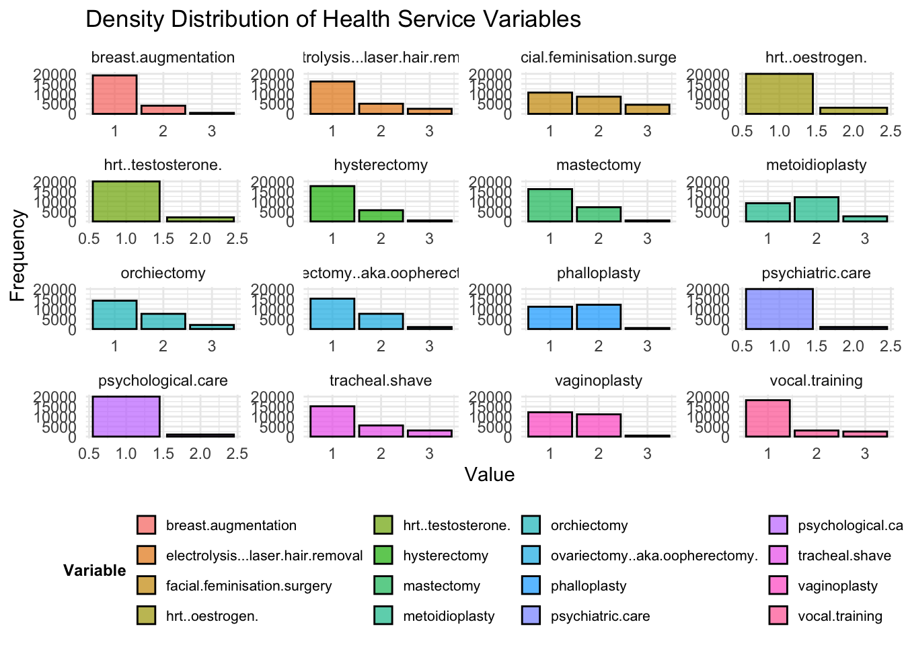

rm(list = ls())
library(haven)
library(tidyverse)
library(naniar)
library(visdat)
library(mice)
library(GGally)
library(corrplot)
library(randomForest)
library(ggcorrplot)
library(reshape2)
library(readr)
library(caret)
library(dplyr)
library(ggplot2)
library(viridis)
library(MASS)
library(lme4)
library(sjPlot)
library(tidyr)
library(patchwork)
library(car)
library(nnet)
library(highcharter)
library(scales)Survey Methodology Group Prj
Final Assignment
Libraries
Data uploading
data <- read_dta("data_cleaning_files/ZA7575.dta")
edueco_data <- read_csv("data_cleaning_files/UNESCO Edu Country Data 2019/edueco_data.csv")
trans_health_data <-read.csv("data_cleaning_files/trans_health_data.csv")
ilga_data <- read_csv("data_cleaning_files/ilga_data.csv")Data Cleaning
Cleaning specific variables to determine which are the more important ones for our analysis.
data_clean<- data %>%
mutate(across(where(is.labelled), as.numeric))
data_clean <- data_clean |>
dplyr::select(where(is.numeric))|>
dplyr::select(-c(edition,studyno1, studyno2,survey, caseid, uniqid))Handling missing data
total_missing <- sum(is.na(data_clean))
cat("Total Missing:", total_missing, "\n")Total Missing: 2506136 missing_per_column <- colSums(is.na(data_clean))
missing_df <- data.frame(Variable = names(missing_per_column),
Missing_Count = missing_per_column,
Missing_Percentage = (missing_per_column / nrow(data)) * 100)
missing_df <- missing_df[order(-missing_df$Missing_Percentage), ]
high_missing <- missing_df[missing_df$Missing_Percentage > 50, ]In general, there are 2,506,136 missing values in the data set. The output of the code shows the names of the columns (p6mt, p13mt, p6cy, etc.) and the corresponding counts of missing values for each.
high_missing_vars <- names(missing_per_column[missing_per_column >50])
data_clean <- data_clean[, !(names(data_clean) %in% high_missing_vars)]
constant_vars <- names(Filter(function(x) length(unique(x)) == 1, data_clean))
data_clean <- data_clean[, !(names(data_clean) %in% constant_vars)]First, we identified and removed columns that had more than 50% missing values, as they can negatively affect the quality of analysis. This was achieved by creating a list of columns where the missing data percentage exceeded 50%, and then filtering out these columns from the data_clean data set.
Then, we removed constant columns, which do not provide useful information for the analysis, since they lack variability. To identify constant columns, we checked each column for the number of unique values and filtered out those that only had one unique value. This step ensures that the data set contains only columns that offer meaningful variation and are more useful for analysis.
Formatting and more…
numeric_data <- data_clean[, sapply(data_clean, is.numeric)]
# Identify constant columns (standard deviation = 0)
zero_sd_vars <- sapply(numeric_data, function(x) sd(x, na.rm = TRUE) == 0)
# Remove constant columns
numeric_data <- numeric_data[, !zero_sd_vars]
# Compute the correlation matrix
cor_matrix <- cor(numeric_data, use = "pairwise.complete.obs")
high_cor <- findCorrelation(cor_matrix, cutoff = 0.90)
filtered_data <- numeric_data[, -high_cor]We created a subset containing only the numeric data. This was achieved by selecting the numeric columns from the data_clean dataset using the sapply() function. Then, we created a new data set (numeric_data) that contained only the numeric columns, so that we can focus on the variables that are relevant for numerical analysis and exclude any non-numeric columns that could complicate the process.
We identified constant columns once again: we calculated the standard deviation of each column, and if the standard deviation was 0, it indicated that the column was constant. These columns were flagged and removed from the data set. Removing them ensured that only meaningful columns remained in the data set.
Afterwards, we examined the correlation between the columns in the numeric data set, which measures the relationship between two variables. We used the cor() function to compute the correlation matrix, with the use = "pairwise.complete.obs" argument ensuring that only complete pairs of observations were used, ignoring any missing values. This step was necessary to understand how the variables relate to each other and to avoid issues that arise from highly correlated features, since highly correlated columns can cause multicollinearity in modeling.
Since highly correlated variables can distort the results of regression models and lead to less reliable interpretations, we identified columns with high correlation, meaning a correlation coefficient greater than 0.90. These columns were selected using the findCorrelation() function and removed from the data set.
Since high_cor contained the indices of the highly correlated columns, we excluded those columns from the numeric_data dataset.
The resulting data set, named filtered_data, now contains only the variables that are relevant and not highly correlated. This step was crucial to ensure that we had a data set with distinct and useful features for further analysis.
Imputation
# List of different imputation methods to test
method_list <- c("pmm", "rf", "cart")
# Store the imputed datasets
imputed_datasets <- list()
for (method in method_list) {
cat("\nRunning:", method, "...\n")
# Perform imputation using the selected method
imputed_datasets[[method]] <- mice(data_clean, method = method, m = 3, maxit = 3, seed = 123)
}
Running: pmm ...
iter imp variable
1 1
1 2
1 3
2 1
2 2
2 3
3 1
3 2
3 3Warning: Number of logged events: 14
Running: rf ...
iter imp variable
1 1
1 2
1 3
2 1
2 2
2 3
3 1
3 2
3 3Warning: Number of logged events: 14
Running: cart ...
iter imp variable
1 1
1 2
1 3
2 1
2 2
2 3
3 1
3 2
3 3Warning: Number of logged events: 14Thanks to this code, we can test different imputation methods to fill in missing values in the data set data_clean and see which one works best for the data set.
The three imputation methods chosen for testing in this code are "pmm", "rf", and "cart".
PMM: Predictive Mean Matching, a method that uses regression models to impute missing values based on similar observed values.
RF: Random Forest, a machine learning algorithm that can be used to predict missing values based on the relationships between other variables in the dataset.
CART: Classification and Regression Trees, a decision tree method that can be used for both classification and regression tasks, and it is also effective in imputing missing data.
After we defined the list of imputation methods, the code loops through each of these methods one by one to apply them to our dataset. For each method, a message is printed to let us know which method is currently being used. This makes it easier for us to follow the process, especially when we are running multiple methods.
For each method, the imputation is performed on the data_clean data set: the code creates three different versions of the data set, each with the missing values filled in a slightly different way. These multiple datasets help to ensure that the imputed values are reliable and not just based on one estimation.
To make the imputation process more accurate, the method is run three times for each data set. This means that the imputation is refined over three cycles to get better results. By repeating the process, we can be more confident that the filled-in values are close to what the actual values might have been.
Finally, and after performing the imputation for each method, the resulting datasets are stored in a list, which allows us to keep track of which imputed data set came from which method. Each method’s dataset is labeled by the name of the method, so we can easily compare the results later on to see which method worked best for our data set.
data_comparison <- data.frame(
Original = as.numeric(numeric_data[["qc19"]]), # Original before imputation
PMM = as.numeric(complete(imputed_datasets[["pmm"]])[["qc19"]]),
RF = as.numeric(complete(imputed_datasets[["rf"]])[["qc19"]]),
CART = as.numeric(complete(imputed_datasets[["cart"]])[["qc19"]])
)
plot_data <- melt(data_comparison,
variable.name = "Method", value.name = "qc19_values")No id variables; using all as measure variablesThe first part of the code creates a new dataset called data_comparison, used to compare the original data (before any imputation) with the imputed values. This dataset includes the qc19 column from the original data and the imputed values from the three different methods (PMM, RF, and CART). Each method’s imputed values are extracted from the imputed datasets we generated earlier and added to the comparison table. The purpose of this is to visually compare the original data with the different imputation methods to see how the imputed values differ.
Then, we use the reshape2 library to transform the data into a format suitable for plotting. The melt() function is used to convert the data into a “long format,” where each row represents a value from one of the imputed datasets, along with the method used. The new column called “Method” stores the method names (PMM, RF, and CART), and the column qc19_values stores the values for the qc19 column from each dataset.
# Plot
ggplot(plot_data, aes(x = qc19_values, fill = Method)) +
geom_histogram(binwidth = 1, alpha = 0.6, position = "identity") +
facet_wrap(~Method, scales = "free_y") + # Separate plots for each method
labs(title = "Comparison of Imputation Methods",
x = "qc19 Values", y = "Frequency") +
theme_minimal()
Thanks to this graph, we can compare the distribution of qc19 values across different imputation methods (PMM, RF, CART) and the original dataset.
The distributions in each subplot look quite similar, suggesting that the imputed data preserves the original pattern well.
Some imputation methods may introduce subtle differences, particularly in the frequency of certain qc19 values, which can be seen in slight variations in bar heights.
Merging all datasets
# Step 1: relevant columns from filtered_data
selected_data <- filtered_data |>
dplyr::select(c(
"serialid", "d70", "d71_1", "d71_2", "d71_3", "d72_1", "d72_2", "polintr", "d10", "d25", "d1", "d63", "sd2_1", "sd2_2", "sd2_3", "sd2_4", "sd2_5", "sd2_6", "sd2_7", "sd3", "qc1_4", "qc1_8", "qc1_10", "d8r1", "d8r2", "d8", "qc19"))
# Step 2: relevant columns from `data`
country_data <- data |>
dplyr::select("serialid", "isocntry", "qc17_4", "qc17_3", "qc17_5")
colnames(trans_health_data) <- tolower(colnames(trans_health_data))
colnames(ilga_data) <- tolower(colnames(ilga_data))
edueco_data <- edueco_data |>
inner_join(trans_health_data, by= "country")
edueco_data <- edueco_data |>
inner_join(ilga_data, by= "country")
# Step 3: Merge country_data with edueco_data based on country codes
country_data <- country_data %>%
inner_join(edueco_data, by = c("isocntry" = "iso2c"))
# Step 4: Merge selected_data with country_data using "serialid" as the key
merged_data <- selected_data %>%
inner_join(country_data, by = "serialid")
merged_data <- merged_data |> rename(
lifesat = d70,
natmat = d71_1,
eumat = d71_2,
locmat = d71_3,
euvoice = d72_1,
natvoice = d72_2,
gender = d10,
community = d25,
ideo = d1,
class = d63,
ethnic = sd2_1,
skin = sd2_2,
relig = sd2_3,
roma = sd2_4,
sex = sd2_5,
disab = sd2_6,
other = sd2_7,
religion = sd3,
sexdiscr = qc1_4,
transdiscr = qc1_8,
interdiscr = qc1_10,
transgender_civil_dc = qc19,
gdp = `NY.GDP.MKTP.CD`,
edu_exp_pct = `SE.XPD.TOTL.GD.ZS`,
preprim_exp = `PrePrimary (XSPENDP.02.FDPUB.FNCUR)`,
prim_exp = `Primary (XSPENDP.1.FDPUB.FNCUR)`,
lose_exp = `LowerSecondary (XSPENDP.2.FDPUB.FNCUR)`,
upse_exp = `UpperSecondary (XSPENDP.2T3.FDPUB.FNCUR)`,
ter_exp = `Tertiary (XSPENDP.3.FDPUB.FNCUR)`,
voc_exp = `VocationalTraining (XSPENDP.4.FDPUB.FNCUR)`,
school_div_sexual_orientation = qc17_3,
school_div_transgender = qc17_4,
school_div_intersex= qc17_5,
age_edu = d8,
age_edu_5cat = d8r1,
age_edu_11cat = d8r2,
nolger = `no legal framework making legal gender recognition impossible`,
exist_lgme = `existence of legal measures`,
exist_adm = `existence of administrative procedures`,
name_change = `name change`,
nar_name_change = `no age restriction, name change`,
self_det = `self-determination`,
nb_recog = `non-binary recognition`,
psych_diag = `no 'gender identity disorder' diagnosis/psychological opinion required`,
med_interven = `no compulsory medical intervention required`,
surg_interven = `no compulsory surgical intervention required`,
steril_req = `no compulsory sterilisation required`,
div_req = `no compulsory divorce required`,
age_restrict = `no age restriction`,
lgrp_minors = `legal gender recognition procedures exist for minors`,
depath = `depathologisation`
)
merged_data<- merged_data |>
dplyr::select(-c(x, isocntry, ...1))
merged_data <- merged_data |> dplyr::select(country, iso3c, everything())
write.csv(merged_data, "final_data.csv", col.names = TRUE)Warning in write.csv(merged_data, "final_data.csv", col.names = TRUE): attempt
to set 'col.names' ignoredDescriptive Analysis
In this section, we aim to identify factors influencing support for or opposition to transgender rights, particularly the ability to change civil documents. Our analysis will alternate between individual-level and country-level perspectives
final_data <-read_csv("data_cleaning_files/final_data.csv")
final_data<- final_data[, -1]Missing data imputation
#numeric variables
summary(final_data) country iso3c serialid lifesat
Length:23798 Length:23798 Min. : 1 Min. :1.000
Class :character Class :character 1st Qu.: 5950 1st Qu.:1.000
Mode :character Mode :character Median :11900 Median :2.000
Mean :13188 Mean :1.977
3rd Qu.:20408 3rd Qu.:2.000
Max. :27438 Max. :5.000
natmat eumat locmat euvoice
Min. :1.000 Min. :1.000 Min. :1.000 Min. :1.000
1st Qu.:2.000 1st Qu.:2.000 1st Qu.:2.000 1st Qu.:2.000
Median :2.000 Median :2.000 Median :2.000 Median :2.000
Mean :2.019 Mean :2.195 Mean :2.036 Mean :2.649
3rd Qu.:2.000 3rd Qu.:3.000 3rd Qu.:2.000 3rd Qu.:3.000
Max. :4.000 Max. :4.000 Max. :4.000 Max. :6.000
natvoice polintr gender community ideo
Min. :1.000 Min. :1.000 Min. :1.000 Min. :1.000 Min. : 1.0
1st Qu.:2.000 1st Qu.:2.000 1st Qu.:1.000 1st Qu.:1.000 1st Qu.: 4.0
Median :2.000 Median :2.000 Median :2.000 Median :2.000 Median : 6.0
Mean :2.411 Mean :2.352 Mean :1.547 Mean :1.968 Mean :21.8
3rd Qu.:3.000 3rd Qu.:3.000 3rd Qu.:2.000 3rd Qu.:3.000 3rd Qu.: 9.0
Max. :6.000 Max. :4.000 Max. :2.000 Max. :8.000 Max. :98.0
class ethnic skin relig
Min. :1.000 Min. :0.00000 Min. :0.00000 Min. :0.00000
1st Qu.:1.000 1st Qu.:0.00000 1st Qu.:0.00000 1st Qu.:0.00000
Median :3.000 Median :0.00000 Median :0.00000 Median :0.00000
Mean :2.607 Mean :0.03067 Mean :0.01878 Mean :0.03782
3rd Qu.:3.000 3rd Qu.:0.00000 3rd Qu.:0.00000 3rd Qu.:0.00000
Max. :9.000 Max. :1.00000 Max. :1.00000 Max. :1.00000
roma sex disab other
Min. :0.0000 Min. :0.00000 Min. :0.00000 Min. :0.00000
1st Qu.:0.0000 1st Qu.:0.00000 1st Qu.:0.00000 1st Qu.:0.00000
Median :0.0000 Median :0.00000 Median :0.00000 Median :0.00000
Mean :0.0158 Mean :0.01668 Mean :0.02542 Mean :0.01588
3rd Qu.:0.0000 3rd Qu.:0.00000 3rd Qu.:0.00000 3rd Qu.:0.00000
Max. :1.0000 Max. :1.00000 Max. :1.00000 Max. :1.00000
religion sexdiscr transdiscr interdiscr
Min. : 1.000 Min. :1.000 Min. :1.000 Min. :1.000
1st Qu.: 1.000 1st Qu.:2.000 1st Qu.:2.000 1st Qu.:2.000
Median : 2.000 Median :3.000 Median :3.000 Median :3.000
Mean : 4.758 Mean :2.799 Mean :3.141 Mean :3.399
3rd Qu.:12.000 3rd Qu.:3.000 3rd Qu.:4.000 3rd Qu.:4.000
Max. :16.000 Max. :6.000 Max. :6.000 Max. :6.000
age_edu_5cat age_edu_11cat age_edu transgender_civil_dc
Min. : 1.000 Min. :1.000 Min. : 0.00 Min. :1.00
1st Qu.: 5.000 1st Qu.:2.000 1st Qu.:18.00 1st Qu.:1.00
Median : 6.000 Median :2.000 Median :19.00 Median :1.00
Mean : 7.552 Mean :2.473 Mean :26.42 Mean :1.59
3rd Qu.: 9.000 3rd Qu.:3.000 3rd Qu.:23.00 3rd Qu.:2.00
Max. :98.000 Max. :8.000 Max. :99.00 Max. :3.00
school_div_transgender school_div_sexual_orientation school_div_intersex
Min. :1.000 Min. :1.000 Min. :1.000
1st Qu.:1.000 1st Qu.:1.000 1st Qu.:1.000
Median :2.000 Median :2.000 Median :2.000
Mean :2.351 Mean :2.236 Mean :2.366
3rd Qu.:3.000 3rd Qu.:3.000 3rd Qu.:3.000
Max. :5.000 Max. :5.000 Max. :5.000
year gdp edu_exp_pct preprim_exp
Min. :2019 Min. :1.634e+10 Min. :3.296 Min. :86.60
1st Qu.:2019 1st Qu.:6.147e+10 1st Qu.:4.095 1st Qu.:91.31
Median :2019 Median :2.568e+11 Median :4.630 Median :93.51
Mean :2019 Mean :4.976e+11 Mean :4.841 Mean :93.33
3rd Qu.:2019 3rd Qu.:5.367e+11 3rd Qu.:5.260 3rd Qu.:94.92
Max. :2019 Max. :2.723e+12 Max. :7.639 Max. :99.89
NA's :3006
prim_exp lose_exp upse_exp ter_exp
Min. :82.98 Min. :83.10 Min. :81.38 Min. :79.99
1st Qu.:89.86 1st Qu.:89.86 1st Qu.:90.81 1st Qu.:91.35
Median :93.45 Median :93.90 Median :93.69 Median :93.66
Mean :92.50 Mean :92.68 Mean :92.96 Mean :93.37
3rd Qu.:95.66 3rd Qu.:95.95 3rd Qu.:95.93 3rd Qu.:96.47
Max. :99.69 Max. :97.90 Max. :98.22 Max. :98.59
NA's :997 NA's :997 NA's :997
voc_exp psychological.care psychiatric.care breast.augmentation
Min. : 0.00 Min. :1.000 Min. :1.000 Min. :1.000
1st Qu.: 76.64 1st Qu.:1.000 1st Qu.:1.000 1st Qu.:1.000
Median : 91.25 Median :1.000 Median :1.000 Median :1.000
Mean : 74.39 Mean :1.043 Mean :1.043 Mean :1.214
3rd Qu.: 97.83 3rd Qu.:1.000 3rd Qu.:1.000 3rd Qu.:1.000
Max. :100.00 Max. :2.000 Max. :2.000 Max. :3.000
NA's :6082
electrolysis...laser.hair.removal facial.feminisation.surgery hrt..oestrogen.
Min. :1.000 Min. :1.000 Min. :1.000
1st Qu.:1.000 1st Qu.:1.000 1st Qu.:1.000
Median :1.000 Median :2.000 Median :1.000
Mean :1.427 Mean :1.744 Mean :1.129
3rd Qu.:2.000 3rd Qu.:2.000 3rd Qu.:1.000
Max. :3.000 Max. :3.000 Max. :2.000
hrt..testosterone. hysterectomy mastectomy metoidioplasty
Min. :1.000 Min. :1.000 Min. :1.000 Min. :1.000
1st Qu.:1.000 1st Qu.:1.000 1st Qu.:1.000 1st Qu.:1.000
Median :1.000 Median :1.000 Median :1.000 Median :2.000
Mean :1.085 Mean :1.279 Mean :1.342 Mean :1.725
3rd Qu.:1.000 3rd Qu.:2.000 3rd Qu.:2.000 3rd Qu.:2.000
Max. :2.000 Max. :3.000 Max. :3.000 Max. :3.000
orchiectomy ovariectomy..aka.oopherectomy. phalloplasty tracheal.shave
Min. :1.00 Min. :1.000 Min. :1.000 Min. :1.000
1st Qu.:1.00 1st Qu.:1.000 1st Qu.:1.000 1st Qu.:1.000
Median :1.00 Median :1.000 Median :2.000 Median :1.000
Mean :1.49 Mean :1.404 Mean :1.553 Mean :1.492
3rd Qu.:2.00 3rd Qu.:2.000 3rd Qu.:2.000 3rd Qu.:2.000
Max. :3.00 Max. :3.000 Max. :3.000 Max. :3.000
vaginoplasty vocal.training nolger exist_lgme
Min. :1.000 Min. :1.000 Min. :0.0000 Min. :0.0000
1st Qu.:1.000 1st Qu.:1.000 1st Qu.:1.0000 1st Qu.:1.0000
Median :1.000 Median :1.000 Median :1.0000 Median :1.0000
Mean :1.511 Mean :1.342 Mean :0.9135 Mean :0.7647
3rd Qu.:2.000 3rd Qu.:1.000 3rd Qu.:1.0000 3rd Qu.:1.0000
Max. :3.000 Max. :3.000 Max. :1.0000 Max. :1.0000
exist_adm name_change nar_name_change self_det
Min. :0.0000 Min. :0.0000 Min. :0.0000 Min. :0.0000
1st Qu.:1.0000 1st Qu.:1.0000 1st Qu.:0.0000 1st Qu.:0.0000
Median :1.0000 Median :1.0000 Median :1.0000 Median :0.0000
Mean :0.8274 Mean :0.7857 Mean :0.5084 Mean :0.2968
3rd Qu.:1.0000 3rd Qu.:1.0000 3rd Qu.:1.0000 3rd Qu.:1.0000
Max. :1.0000 Max. :1.0000 Max. :1.0000 Max. :1.0000
nb_recog psych_diag med_interven surg_interven
Min. :0 Min. :0.0000 Min. :0.0000 Min. :0.0000
1st Qu.:0 1st Qu.:0.0000 1st Qu.:0.0000 1st Qu.:1.0000
Median :0 Median :0.0000 Median :0.0000 Median :1.0000
Mean :0 Mean :0.3818 Mean :0.4676 Mean :0.7639
3rd Qu.:0 3rd Qu.:1.0000 3rd Qu.:1.0000 3rd Qu.:1.0000
Max. :0 Max. :1.0000 Max. :1.0000 Max. :1.0000
steril_req div_req age_restrict lgrp_minors
Min. :0.0000 Min. :0.0000 Min. :0.000 Min. :0.0000
1st Qu.:1.0000 1st Qu.:0.0000 1st Qu.:0.000 1st Qu.:0.0000
Median :1.0000 Median :1.0000 Median :0.000 Median :1.0000
Mean :0.7639 Mean :0.5945 Mean :0.213 Mean :0.5101
3rd Qu.:1.0000 3rd Qu.:1.0000 3rd Qu.:0.000 3rd Qu.:1.0000
Max. :1.0000 Max. :1.0000 Max. :1.000 Max. :1.0000
depath
Min. :0.0000
1st Qu.:0.0000
Median :0.0000
Mean :0.0208
3rd Qu.:0.0000
Max. :1.0000
# Visualize missing values
gg_miss_var(final_data) +
theme_minimal() +
labs(title = "Missing Data Patterns")
In this analysis, we examined the missing data patterns in the dataset to assess data completeness and identify potential issues. The visualization helped determine which variables contain missing values and to what extent. While some variables were fully observed, others had significant gaps, requiring appropriate handling strategies.
# Ensure final_data is a data frame
final_data <- as.data.frame(final_data)
# only variables with missing data for imputation
impute_vars <- final_data %>% dplyr::select(`preprim_exp`, `prim_exp`, `lose_exp`, `upse_exp`, `voc_exp`)
# Generate a predictor matrix
predictorMatrix <- make.predictorMatrix(impute_vars)
imputed_data <- mice(impute_vars, method = "mean", m = 5, maxit = 10, seed = 123)
iter imp variable
1 1 preprim_exp prim_exp lose_exp upse_exp voc_exp
1 2 preprim_exp prim_exp lose_exp upse_exp voc_exp
1 3 preprim_exp prim_exp lose_exp upse_exp voc_exp
1 4 preprim_exp prim_exp lose_exp upse_exp voc_exp
1 5 preprim_exp prim_exp lose_exp upse_exp voc_exp
2 1 preprim_exp prim_exp lose_exp upse_exp voc_exp
2 2 preprim_exp prim_exp lose_exp upse_exp voc_exp
2 3 preprim_exp prim_exp lose_exp upse_exp voc_exp
2 4 preprim_exp prim_exp lose_exp upse_exp voc_exp
2 5 preprim_exp prim_exp lose_exp upse_exp voc_exp
3 1 preprim_exp prim_exp lose_exp upse_exp voc_exp
3 2 preprim_exp prim_exp lose_exp upse_exp voc_exp
3 3 preprim_exp prim_exp lose_exp upse_exp voc_exp
3 4 preprim_exp prim_exp lose_exp upse_exp voc_exp
3 5 preprim_exp prim_exp lose_exp upse_exp voc_exp
4 1 preprim_exp prim_exp lose_exp upse_exp voc_exp
4 2 preprim_exp prim_exp lose_exp upse_exp voc_exp
4 3 preprim_exp prim_exp lose_exp upse_exp voc_exp
4 4 preprim_exp prim_exp lose_exp upse_exp voc_exp
4 5 preprim_exp prim_exp lose_exp upse_exp voc_exp
5 1 preprim_exp prim_exp lose_exp upse_exp voc_exp
5 2 preprim_exp prim_exp lose_exp upse_exp voc_exp
5 3 preprim_exp prim_exp lose_exp upse_exp voc_exp
5 4 preprim_exp prim_exp lose_exp upse_exp voc_exp
5 5 preprim_exp prim_exp lose_exp upse_exp voc_exp
6 1 preprim_exp prim_exp lose_exp upse_exp voc_exp
6 2 preprim_exp prim_exp lose_exp upse_exp voc_exp
6 3 preprim_exp prim_exp lose_exp upse_exp voc_exp
6 4 preprim_exp prim_exp lose_exp upse_exp voc_exp
6 5 preprim_exp prim_exp lose_exp upse_exp voc_exp
7 1 preprim_exp prim_exp lose_exp upse_exp voc_exp
7 2 preprim_exp prim_exp lose_exp upse_exp voc_exp
7 3 preprim_exp prim_exp lose_exp upse_exp voc_exp
7 4 preprim_exp prim_exp lose_exp upse_exp voc_exp
7 5 preprim_exp prim_exp lose_exp upse_exp voc_exp
8 1 preprim_exp prim_exp lose_exp upse_exp voc_exp
8 2 preprim_exp prim_exp lose_exp upse_exp voc_exp
8 3 preprim_exp prim_exp lose_exp upse_exp voc_exp
8 4 preprim_exp prim_exp lose_exp upse_exp voc_exp
8 5 preprim_exp prim_exp lose_exp upse_exp voc_exp
9 1 preprim_exp prim_exp lose_exp upse_exp voc_exp
9 2 preprim_exp prim_exp lose_exp upse_exp voc_exp
9 3 preprim_exp prim_exp lose_exp upse_exp voc_exp
9 4 preprim_exp prim_exp lose_exp upse_exp voc_exp
9 5 preprim_exp prim_exp lose_exp upse_exp voc_exp
10 1 preprim_exp prim_exp lose_exp upse_exp voc_exp
10 2 preprim_exp prim_exp lose_exp upse_exp voc_exp
10 3 preprim_exp prim_exp lose_exp upse_exp voc_exp
10 4 preprim_exp prim_exp lose_exp upse_exp voc_exp
10 5 preprim_exp prim_exp lose_exp upse_exp voc_exp# Replace missing values with the first imputed dataset
final_data <- final_data %>%
mutate(
preprim_exp = complete(imputed_data, 1)$preprim_exp,
prim_exp = complete(imputed_data, 1)$prim_exp,
lose_exp = complete(imputed_data, 1)$lose_exp,
upse_exp = complete(imputed_data, 1)$upse_exp,
voc_exp = complete(imputed_data, 1)$voc_exp
)
# Check if imputation worked correctly
summary(final_data$voc_exp) Min. 1st Qu. Median Mean 3rd Qu. Max.
0.00 74.39 88.32 74.39 95.03 100.00 summary(final_data$preprim_exp) Min. 1st Qu. Median Mean 3rd Qu. Max.
86.60 92.06 93.33 93.33 94.88 99.89 summary(final_data$prim_exp) Min. 1st Qu. Median Mean 3rd Qu. Max.
82.98 89.86 93.45 92.50 95.66 99.69 summary(final_data$lose_exp) Min. 1st Qu. Median Mean 3rd Qu. Max.
83.10 89.86 93.44 92.68 95.95 97.90 summary(final_data$upse_exp) Min. 1st Qu. Median Mean 3rd Qu. Max.
81.38 90.81 93.48 92.96 95.93 98.22 We handled missing data using mean imputation with the MICE package. This method replaces missing values with the average of observed values for each variable, preventing data loss while maintaining consistency. We focused on five education expenditure variables (preprim_exp, prim_exp, lose_exp, upse_exp, voc_exp), ensuring they no longer contain missing values.
After imputation, the summary statistics confirmed that all variables now have complete data, with reasonable mean and range values. However, since mean imputation can reduce variability, we need to check whether the data distribution has been affected. Notably, voc_exp has a minimum value of 0, unlike other variables with higher minimums, suggesting a different distribution pattern.
Overall, our imputation process successfully addressed missing data, making the dataset more reliable for further analysis. To ensure the imputed values align well with the data structure, we recommend additional visual checks, such as histograms or density plots.
# Visualize missing values
gg_miss_var(final_data) +
theme_minimal() +
labs(title = "After Imputation, Missing Data Patterns")
The visualization confirms that after performing mean imputation, all missing values in the dataset have been successfully handled. The vertical bar at zero missing values indicates that no variables contain missing data anymore. This means our imputation process effectively filled in all gaps, making the dataset complete and ready for further analysis.
Descriptive Statistic
(1) Individual-Level Data
# only individual-level variables
individual_vars <- final_data %>%
dplyr::select(gender, age_edu_5cat, age_edu_11cat, polintr, natvoice, euvoice, relig,
roma, skin, sexdiscr, transdiscr, school_div_transgender,
school_div_sexual_orientation, school_div_intersex, transgender_civil_dc)We categorized survey variables into meaningful groups (e.g., Demographics, Identity, School Measures). Then, we reshaped the data into a long format and assigned clear labels for better interpretation. We created histograms to visualize the distribution of numerical variables and a bar chart to analyze categorical variables (e.g., gender). The workflow enhances data organization, clarity, and visualization for better insights.
# Function to Categorize Variables
categorize_variables <- function(var_name) {
if (var_name %in% c("age_edu_5cat", "age_edu_11cat", "skin")) {
return("Demographics")
} else if (var_name %in% c("school_div_intersex", "school_div_sexual_orientation", "school_div_transgender")) {
return("School Should Give Information Measures")
} else if (var_name %in% c("natvoice", "euvoice")) {
return("Voice Representation")
} else if (var_name %in% c("relig", "roma")) {
return("Identity")
} else {
return("Other Variables")
}
}
# Prepare Data
improved_data <- individual_vars %>%
pivot_longer(cols = everything(), names_to = "Variable", values_to = "Value") %>%
mutate(
Variable_Group = sapply(Variable, categorize_variables),
Variable_Label = case_when(
Variable == "age_edu_5cat" ~ "Age-Education (5 cat)",
Variable == "age_edu_11cat" ~ "Age-Education (11 cat)",
Variable == "skin" ~ "Skin Color",
Variable == "school_div_intersex" ~ "School Diversity (Intersex)",
Variable == "school_div_sexual_orientation" ~ "School Diversity (Sexual Orientation)",
Variable == "school_div_transgender" ~ "School Diversity (Transgender)",
Variable == "natvoice" ~ "Native Voice",
Variable == "euvoice" ~ "European Voice",
Variable == "polintr" ~ "Political Interest",
Variable == "relig" ~ "Religion",
Variable == "roma" ~ "Roma Identity",
Variable == "sexdiscr" ~ "Sexual Discrimination",
Variable == "transdiscr" ~ "Transgender Discrimination",
TRUE ~ Variable
)
)
# Function to Create Histograms
create_improved_histogram <- function(data, group_name) {
filtered_data <- data %>% filter(Variable_Group == group_name)
ggplot(filtered_data, aes(x = Value)) +
geom_histogram(bins = 15, color = "white", fill = "blue", alpha = 0.9) +
facet_wrap(~replace_na(Variable_Label, "Unknown"), scales = "free", ncol = 2) +
labs(
title = paste("Distribution of", group_name),
x = "Value",
y = "Frequency",
caption = "Values shown as frequencies rather than percentages for better readability"
) +
theme_minimal(base_size = 12) +
theme(
plot.title = element_text(size = 16, face = "bold", hjust = 0.5),
axis.title = element_text(size = 12, face = "bold"),
axis.text.x = element_text(angle = 30, hjust = 1, size = 10),
axis.text.y = element_text(size = 10),
strip.text = element_text(size = 12, face = "bold"),
strip.background = element_rect(fill = "lightgray", color = NA),
panel.spacing = unit(1, "lines"),
legend.position = "right",
)
}
# Generate Histograms
demographics_plot <- create_improved_histogram(improved_data, "Demographics")
information_plot <- create_improved_histogram(improved_data, "School Should Give Information Measures")
voice_plot <- create_improved_histogram(improved_data, "Voice Representation")
identity_plot <- create_improved_histogram(improved_data, "Identity")
other_plot <- create_improved_histogram(improved_data, "Other Variables")
# Function to Create Bar Charts
create_bar_chart <- function(data, variable_name) {
if (!variable_name %in% colnames(data)) {
stop(paste("Error: Column", variable_name, "not found in data!"))
}
var_data <- data %>%
dplyr::select(all_of(variable_name)) %>%
rename(Value = all_of(variable_name)) %>%
drop_na() %>% # Remove missing values
group_by(Value) %>%
summarize(Count = n(), .groups = "drop") %>%
mutate(
Percentage = Count / sum(Count) * 100,
Value = factor(Value)
)
var_label <- improved_data %>%
filter(Variable == variable_name) %>%
pull(Variable_Label) %>%
unique()
if (length(var_label) == 0) {
var_label <- variable_name
}
ggplot(var_data, aes(x = Value, y = Percentage, fill = Percentage)) +
geom_bar(stat = "identity", width = 0.7) +
geom_text(aes(label = sprintf("%.1f%%", Percentage)), position = position_stack(vjust = 0.5), color = "black") +
labs(title = paste("Distribution of", var_label), x = "Category", y = "Percentage (%)") +
theme_minimal()
}
# Generate Bar Chart for Gender
if ("gender" %in% colnames(individual_vars)) {
gender_bar <- create_bar_chart(individual_vars, "gender")
} else {
print("Warning: The column 'gender' is missing from the dataset!")
}Demographics: Age-Education Distribution Analysis
demographics_plot
This variable categorizes individuals based on the age at which they completed full-time education. The dataset contains two versions: an 11-category classification and a simplified 5-category grouping.
In the detailed 11-category version, respondents are categorized from “Up to 14 years” (1) to “22 years and older” (9), alongside “Still studying” (10) and “No full-time education” (11). The most common completion ages are 15 years (2) and 16 years (3), suggesting that a significant proportion of individuals exit full-time education during their teenage years. In contrast, fewer respondents remain in school past the age of 21.
The simplified 5-category classification merges some of these distinctions, grouping individuals as:
- “Up to 15 years” (1): Those who left school by age 15.
- “16-19 years” (2): Individuals who completed education in their late teens.
- “20 years and older” (3): Those pursuing education beyond 19.
- “Still studying” (4): Respondents currently in full-time education.
- “No full-time education” (5): Individuals who never attended full-time education.
Across both classifications, the data highlights that most individuals leave full-time education at 15 or 16 years old, with fewer continuing beyond that. The presence of a “Still studying” category indicates an active student population, but the relatively low frequencies in higher education categories suggest that early school leaving is prevalent.
These findings offer insights into educational attainment trends and could be useful for policymakers looking to improve retention in higher education.
Additionally, The skin color variable helps categorize individuals based on whether they identify as a minority in terms of skin color. This distinction is crucial in understanding social dynamics, as it can provide insights into experiences of discrimination, representation, and equality within different groups.
The dataset includes two main categories. The first category (0 - Not mentioned) represents individuals who do not identify as part of a racial or ethnic minority based on their skin color. The second category (1 - A minority in terms of skin color) includes individuals who perceive themselves as belonging to a racial or ethnic minority group due to their skin tone.
The distribution of responses shows that the vast majority of individuals fall into the “Not mentioned” category, meaning they do not consider themselves as part of a skin color minority. In contrast, a much smaller proportion of respondents identify as belonging to a racial minority.
This finding suggests that racial or ethnic minorities based on skin color constitute a relatively small fraction of the dataset. Understanding this demographic breakdown is essential when examining disparities in economic opportunities, access to education, or social integration. Additionally, this variable can be used to investigate potential discrimination or differences in social perception based on racial identity.
School Diversity Attitudes
information_plotThe graph illustrates respondents’ opinions on whether schools should provide education about diversity concerning intersex individuals, sexual orientation, and transgender identity. The response categories range from “Totally agree” (1) to “Totally disagree” (4), with an additional category for “Don’t know” (5).
The results indicate that the majority of respondents either “Totally agree” (1) or “Tend to agree” (2) that schools should inform students about diversity in these areas. The highest agreement is observed across all three categories, suggesting broad support for diversity education. However, a notable proportion of respondents “Tend to disagree” (3) or “Totally disagree” (4), reflecting some resistance to integrating these topics into school curricula. Overall, the findings suggest that while most people recognize the importance of diversity education, there are still opposing views that indicate societal divisions on this issue.
Voice Representation
voice_plot
The graph represents perceptions of voice representation in two contexts: at the European level (“European Voice”) and at the national level (“Native Voice”). The responses are categorized into levels of agreement, ranging from “Totally agree” (1) to “Totally disagree” (4), with additional categories for refusals and unknown responses.
The data suggests that a significant portion of respondents “Tend to agree” (2) that their voice is heard both in their country and in the EU, making it the most common response. However, there are also notable groups that “Tend to disagree” (3) or “Totally disagree” (4), indicating skepticism about their influence in political or social discussions. The distribution is relatively similar for both European and national contexts, suggesting that perceptions of representation do not differ drastically between these two levels.
Identity
identity_plot
The dataset analysis highlights how many people identify as religious or ethnic minorities. The graphs show that most individuals do not consider themselves part of these groups. In particular, only a small number identify as part of a religious minority, and the same goes for those who declare a Roma identity.
Gender
gender_barAccording to the results, 54.7% of the respondents are female, while 45.3% are male. This indicates a slight overrepresentation of females in the survey compared to males. The relatively balanced distribution suggests that responses are not significantly skewed toward one gender, allowing for a more comprehensive analysis of gender-based trends and perspectives.
Other variables
other_plot
Discrimination Based on Sexual Orientation and Gender Identity
Discrimination against individuals based on their sexual orientation and gender identity remains a significant issue across various societies. The survey categorizes public perceptions of discrimination into six levels: Very widespread, Fairly widespread, Fairly rare, Very rare, Non-existent (Spontaneous), and Don’t know (DK). These categories help assess the extent to which individuals recognize discrimination in their respective countries.
The results indicate that the majority of respondents perceive discrimination as either very or fairly widespread. This suggests that LGBTQ+ individuals, particularly transgender people, continue to face systemic barriers in social, legal, and professional spheres. A smaller proportion of respondents consider discrimination fairly rare or very rare, implying regional differences in attitudes and legal frameworks that either mitigate or reinforce these experiences.
Interestingly, very few respondents believe that discrimination does not exist at all, reinforcing the notion that discrimination is a recognized issue, even in more progressive societies. Additionally, the presence of responses in the “Don’t know” category indicates a lack of awareness or reluctance to express opinions on this subject, which may be influenced by cultural sensitivities or personal biases.
Comparing discrimination against transgender individuals and sexual orientation-based discrimination, the perception of discrimination against transgender individuals appears slightly higher. This may stem from the additional social and legal barriers that transgender individuals face, including restrictions on gender recognition, healthcare access, and workplace inclusion.
These findings emphasize the need for stronger anti-discrimination policies, legal protections, and social awareness initiatives to ensure the fair treatment of LGBTQ+ individuals. Addressing these issues through education and policy reforms is crucial for fostering inclusive societies that respect and uphold the rights of all individuals, regardless of their gender identity or sexual orientation.
Political Interest
The Political Interest Index categorizes respondents into four levels: Strong (1), Medium (2), Low (3), and Not at all (4). The distribution shows that the majority of respondents fall into the Medium category, suggesting that most individuals engage with politics to some degree but do not exhibit strong interest. Meanwhile, fewer respondents report either strong political interest or no interest at all. This suggests a general trend toward moderate political engagement among participants.
Religion
religion_labels <- c(
"1" = "Catholic",
"2" = "Orthodox Christian",
"3" = "Protestant",
"4" = "Other Christian",
"5" = "Jewish",
"6" = "Muslim - Shia",
"7" = "Muslim - Sunni",
"8" = "Other Muslim",
"9" = "Sikh",
"10" = "Buddhist",
"11" = "Hindu",
"12" = "Atheist",
"13" = "Non believer / Agnostic",
"14" = "Other",
"15" = "Refusal",
"16" = "Don't Know"
)
final_data <- final_data %>%
filter(religion %in% names(religion_labels))
# Convert religion variable to factor with specific labels
final_data$religion1 <- factor(final_data$religion,
levels = names(religion_labels),
labels = religion_labels)
# Count occurrences
religion_counts <- final_data %>%
group_by(religion1) %>%
summarise(Count = n()) %>%
arrange(Count)
# Calculate percentages
religion_counts <- religion_counts %>%
mutate(Percentage = (Count / sum(Count)) * 100)
# Create bar plot
ggplot(religion_counts, aes(x = reorder(religion1, Count), y = Percentage, fill = religion1)) +
geom_bar(stat = "identity", width = 0.7) +
coord_flip()+
labs(
title = "Distribution of Religions",
x = "Religion",
y = "Percentage (%)",
fill = "Religion"
) +
theme_minimal() +
theme(
plot.title = element_text(size = 16, face = "bold", hjust = 0.5),
axis.text.x = element_text(size = 10, angle = 45, hjust = 1),
axis.title = element_text(size = 14, face = "bold"),
legend.position = "none"
)
The distribution of religious denominations shows that Catholicism is the most dominant religion, followed by Orthodox Christianity and Protestantism, while Non-believers/Agnostics and Atheists also represent a significant portion, indicating a strong secular trend. Muslim groups, including Sunni, Shia, and Other Muslim, are relatively small, suggesting they are a minority in the surveyed population. Other religions, such as Buddhism, Judaism, Hinduism, and Sikhism, have minimal representation. Additionally, a small percentage of respondents either refused to disclose their religious affiliation or selected “Don’t Know,” highlighting potential reluctance or uncertainty regarding religious identity. The data overall reflects a predominantly Christian population with notable secular tendencies and limited religious diversity.
final_data$iso3c1 <-as.numeric(final_data$iso3c)Warning: NAs introduced by coercionwestern_europe <- c("BEL", "DNK", "GRC", "ESP", "FIN", "FRA", "IRL", "ITA", "LUX", "NLD", "AUT", "PRT", "SWE")
eastern_europe <- c("BGR", "CYP", "CZE", "EST", "HUN", "LVA", "LTU", "MLT", "POL", "ROU", "SVN", "HRV")
west_data <- final_data[final_data$iso3c %in% western_europe, ]
east_data <- final_data[final_data$iso3c %in% eastern_europe, ]
mean_west <- mean(west_data$transgender_civil_dc)
mean_east <- mean(east_data$transgender_civil_dc)
cat("Average Support in Western Europe: ", mean_west, "\n")Average Support in Western Europe: 1.418983 cat("Average Support in Eastern Europe: ", mean_east, "\n")Average Support in Eastern Europe: 1.784983 final_data$region <- ifelse(final_data$iso3c %in% western_europe, "Western Europe",
ifelse(final_data$iso3c %in% eastern_europe, "Eastern Europe", NA))
# Calculate the support percentage by region (Western vs. Eastern Europe)
region_support <- final_data %>%
group_by(region) %>%
summarise(support_percentage = mean(transgender_civil_dc == 1, na.rm = TRUE) * 100)
# View the support percentage by region
print(region_support)# A tibble: 2 × 2
region support_percentage
<chr> <dbl>
1 Eastern Europe 36.5
2 Western Europe 66.7# Bar plot for support percentage by region
ggplot(region_support, aes(x = region, y = support_percentage, fill = region)) +
geom_bar(stat = "identity", show.legend = FALSE) +
labs(title = "Support for Transgender Rights by Region",
x = "Region",
y = "Support Percentage (%)") +
scale_fill_manual(values = c("#3C8BFA", "#663CFA")) +
theme_minimal()
summary(final_data) country iso3c serialid lifesat
Length:23798 Length:23798 Min. : 1 Min. :1.000
Class :character Class :character 1st Qu.: 5950 1st Qu.:1.000
Mode :character Mode :character Median :11900 Median :2.000
Mean :13188 Mean :1.977
3rd Qu.:20408 3rd Qu.:2.000
Max. :27438 Max. :5.000
natmat eumat locmat euvoice
Min. :1.000 Min. :1.000 Min. :1.000 Min. :1.000
1st Qu.:2.000 1st Qu.:2.000 1st Qu.:2.000 1st Qu.:2.000
Median :2.000 Median :2.000 Median :2.000 Median :2.000
Mean :2.019 Mean :2.195 Mean :2.036 Mean :2.649
3rd Qu.:2.000 3rd Qu.:3.000 3rd Qu.:2.000 3rd Qu.:3.000
Max. :4.000 Max. :4.000 Max. :4.000 Max. :6.000
natvoice polintr gender community ideo
Min. :1.000 Min. :1.000 Min. :1.000 Min. :1.000 Min. : 1.0
1st Qu.:2.000 1st Qu.:2.000 1st Qu.:1.000 1st Qu.:1.000 1st Qu.: 4.0
Median :2.000 Median :2.000 Median :2.000 Median :2.000 Median : 6.0
Mean :2.411 Mean :2.352 Mean :1.547 Mean :1.968 Mean :21.8
3rd Qu.:3.000 3rd Qu.:3.000 3rd Qu.:2.000 3rd Qu.:3.000 3rd Qu.: 9.0
Max. :6.000 Max. :4.000 Max. :2.000 Max. :8.000 Max. :98.0
class ethnic skin relig
Min. :1.000 Min. :0.00000 Min. :0.00000 Min. :0.00000
1st Qu.:1.000 1st Qu.:0.00000 1st Qu.:0.00000 1st Qu.:0.00000
Median :3.000 Median :0.00000 Median :0.00000 Median :0.00000
Mean :2.607 Mean :0.03067 Mean :0.01878 Mean :0.03782
3rd Qu.:3.000 3rd Qu.:0.00000 3rd Qu.:0.00000 3rd Qu.:0.00000
Max. :9.000 Max. :1.00000 Max. :1.00000 Max. :1.00000
roma sex disab other
Min. :0.0000 Min. :0.00000 Min. :0.00000 Min. :0.00000
1st Qu.:0.0000 1st Qu.:0.00000 1st Qu.:0.00000 1st Qu.:0.00000
Median :0.0000 Median :0.00000 Median :0.00000 Median :0.00000
Mean :0.0158 Mean :0.01668 Mean :0.02542 Mean :0.01588
3rd Qu.:0.0000 3rd Qu.:0.00000 3rd Qu.:0.00000 3rd Qu.:0.00000
Max. :1.0000 Max. :1.00000 Max. :1.00000 Max. :1.00000
religion sexdiscr transdiscr interdiscr
Min. : 1.000 Min. :1.000 Min. :1.000 Min. :1.000
1st Qu.: 1.000 1st Qu.:2.000 1st Qu.:2.000 1st Qu.:2.000
Median : 2.000 Median :3.000 Median :3.000 Median :3.000
Mean : 4.758 Mean :2.799 Mean :3.141 Mean :3.399
3rd Qu.:12.000 3rd Qu.:3.000 3rd Qu.:4.000 3rd Qu.:4.000
Max. :16.000 Max. :6.000 Max. :6.000 Max. :6.000
age_edu_5cat age_edu_11cat age_edu transgender_civil_dc
Min. : 1.000 Min. :1.000 Min. : 0.00 Min. :1.00
1st Qu.: 5.000 1st Qu.:2.000 1st Qu.:18.00 1st Qu.:1.00
Median : 6.000 Median :2.000 Median :19.00 Median :1.00
Mean : 7.552 Mean :2.473 Mean :26.42 Mean :1.59
3rd Qu.: 9.000 3rd Qu.:3.000 3rd Qu.:23.00 3rd Qu.:2.00
Max. :98.000 Max. :8.000 Max. :99.00 Max. :3.00
school_div_transgender school_div_sexual_orientation school_div_intersex
Min. :1.000 Min. :1.000 Min. :1.000
1st Qu.:1.000 1st Qu.:1.000 1st Qu.:1.000
Median :2.000 Median :2.000 Median :2.000
Mean :2.351 Mean :2.236 Mean :2.366
3rd Qu.:3.000 3rd Qu.:3.000 3rd Qu.:3.000
Max. :5.000 Max. :5.000 Max. :5.000
year gdp edu_exp_pct preprim_exp
Min. :2019 Min. :1.634e+10 Min. :3.296 Min. :86.60
1st Qu.:2019 1st Qu.:6.147e+10 1st Qu.:4.095 1st Qu.:92.06
Median :2019 Median :2.568e+11 Median :4.630 Median :93.33
Mean :2019 Mean :4.976e+11 Mean :4.841 Mean :93.33
3rd Qu.:2019 3rd Qu.:5.367e+11 3rd Qu.:5.260 3rd Qu.:94.88
Max. :2019 Max. :2.723e+12 Max. :7.639 Max. :99.89
prim_exp lose_exp upse_exp ter_exp
Min. :82.98 Min. :83.10 Min. :81.38 Min. :79.99
1st Qu.:89.86 1st Qu.:89.86 1st Qu.:90.81 1st Qu.:91.35
Median :93.45 Median :93.44 Median :93.48 Median :93.66
Mean :92.50 Mean :92.68 Mean :92.96 Mean :93.37
3rd Qu.:95.66 3rd Qu.:95.95 3rd Qu.:95.93 3rd Qu.:96.47
Max. :99.69 Max. :97.90 Max. :98.22 Max. :98.59
voc_exp psychological.care psychiatric.care breast.augmentation
Min. : 0.00 Min. :1.000 Min. :1.000 Min. :1.000
1st Qu.: 74.39 1st Qu.:1.000 1st Qu.:1.000 1st Qu.:1.000
Median : 88.32 Median :1.000 Median :1.000 Median :1.000
Mean : 74.39 Mean :1.043 Mean :1.043 Mean :1.214
3rd Qu.: 95.03 3rd Qu.:1.000 3rd Qu.:1.000 3rd Qu.:1.000
Max. :100.00 Max. :2.000 Max. :2.000 Max. :3.000
electrolysis...laser.hair.removal facial.feminisation.surgery hrt..oestrogen.
Min. :1.000 Min. :1.000 Min. :1.000
1st Qu.:1.000 1st Qu.:1.000 1st Qu.:1.000
Median :1.000 Median :2.000 Median :1.000
Mean :1.427 Mean :1.744 Mean :1.129
3rd Qu.:2.000 3rd Qu.:2.000 3rd Qu.:1.000
Max. :3.000 Max. :3.000 Max. :2.000
hrt..testosterone. hysterectomy mastectomy metoidioplasty
Min. :1.000 Min. :1.000 Min. :1.000 Min. :1.000
1st Qu.:1.000 1st Qu.:1.000 1st Qu.:1.000 1st Qu.:1.000
Median :1.000 Median :1.000 Median :1.000 Median :2.000
Mean :1.085 Mean :1.279 Mean :1.342 Mean :1.725
3rd Qu.:1.000 3rd Qu.:2.000 3rd Qu.:2.000 3rd Qu.:2.000
Max. :2.000 Max. :3.000 Max. :3.000 Max. :3.000
orchiectomy ovariectomy..aka.oopherectomy. phalloplasty tracheal.shave
Min. :1.00 Min. :1.000 Min. :1.000 Min. :1.000
1st Qu.:1.00 1st Qu.:1.000 1st Qu.:1.000 1st Qu.:1.000
Median :1.00 Median :1.000 Median :2.000 Median :1.000
Mean :1.49 Mean :1.404 Mean :1.553 Mean :1.492
3rd Qu.:2.00 3rd Qu.:2.000 3rd Qu.:2.000 3rd Qu.:2.000
Max. :3.00 Max. :3.000 Max. :3.000 Max. :3.000
vaginoplasty vocal.training nolger exist_lgme
Min. :1.000 Min. :1.000 Min. :0.0000 Min. :0.0000
1st Qu.:1.000 1st Qu.:1.000 1st Qu.:1.0000 1st Qu.:1.0000
Median :1.000 Median :1.000 Median :1.0000 Median :1.0000
Mean :1.511 Mean :1.342 Mean :0.9135 Mean :0.7647
3rd Qu.:2.000 3rd Qu.:1.000 3rd Qu.:1.0000 3rd Qu.:1.0000
Max. :3.000 Max. :3.000 Max. :1.0000 Max. :1.0000
exist_adm name_change nar_name_change self_det
Min. :0.0000 Min. :0.0000 Min. :0.0000 Min. :0.0000
1st Qu.:1.0000 1st Qu.:1.0000 1st Qu.:0.0000 1st Qu.:0.0000
Median :1.0000 Median :1.0000 Median :1.0000 Median :0.0000
Mean :0.8274 Mean :0.7857 Mean :0.5084 Mean :0.2968
3rd Qu.:1.0000 3rd Qu.:1.0000 3rd Qu.:1.0000 3rd Qu.:1.0000
Max. :1.0000 Max. :1.0000 Max. :1.0000 Max. :1.0000
nb_recog psych_diag med_interven surg_interven
Min. :0 Min. :0.0000 Min. :0.0000 Min. :0.0000
1st Qu.:0 1st Qu.:0.0000 1st Qu.:0.0000 1st Qu.:1.0000
Median :0 Median :0.0000 Median :0.0000 Median :1.0000
Mean :0 Mean :0.3818 Mean :0.4676 Mean :0.7639
3rd Qu.:0 3rd Qu.:1.0000 3rd Qu.:1.0000 3rd Qu.:1.0000
Max. :0 Max. :1.0000 Max. :1.0000 Max. :1.0000
steril_req div_req age_restrict lgrp_minors
Min. :0.0000 Min. :0.0000 Min. :0.000 Min. :0.0000
1st Qu.:1.0000 1st Qu.:0.0000 1st Qu.:0.000 1st Qu.:0.0000
Median :1.0000 Median :1.0000 Median :0.000 Median :1.0000
Mean :0.7639 Mean :0.5945 Mean :0.213 Mean :0.5101
3rd Qu.:1.0000 3rd Qu.:1.0000 3rd Qu.:0.000 3rd Qu.:1.0000
Max. :1.0000 Max. :1.0000 Max. :1.000 Max. :1.0000
depath religion1 iso3c1
Min. :0.0000 Catholic :9903 Min. : NA
1st Qu.:0.0000 Orthodox Christian :3904 1st Qu.: NA
Median :0.0000 Non believer / Agnostic:3029 Median : NA
Mean :0.0208 Protestant :2393 Mean :NaN
3rd Qu.:0.0000 Atheist :1788 3rd Qu.: NA
Max. :1.0000 Other :1033 Max. : NA
(Other) :1748 NA's :23798
region
Length:23798
Class :character
Mode :character
table(final_data$transgender_civil_dc)
1 2 3
12512 8526 2760 prop.table(table(final_data$transgender_civil_dc)) * 100
1 2 3
52.57585 35.82654 11.59761 gina’s graph
education_levels <- final_data %>%
mutate(ISCED_Level = case_when(
age_edu == 00 ~ "Still Studying", # Separate category
age_edu == 01 ~ "No Formal Education", # No formal schooling
age_edu == 98 | age_edu == 99 ~ "Refused / Don't Know", # Separate category
age_edu < 5 ~ "Pre-primary",
age_edu >= 5 & age_edu <= 10 ~ "Primary",
age_edu >= 11 & age_edu <= 14 ~ "Lower Secondary",
age_edu >= 15 & age_edu <= 18 ~ "Upper Secondary",
age_edu >= 16 & age_edu <= 19 ~ "Vocational",
age_edu >= 19 ~ "Tertiary",
TRUE ~ NA_character_
))
education_summary <- education_levels %>%
group_by(country, ISCED_Level) %>%
summarise(Count = n(), .groups = "drop") %>%
arrange(country, desc(Count))
education_spending_summary <- education_summary %>%
left_join(final_data %>%
group_by(country) %>%
summarise(
Primary_Spending = mean(prim_exp, na.rm = TRUE),
Lower_Secondary_Spending = mean(lose_exp, na.rm = TRUE),
Upper_Secondary_Spending = mean(upse_exp, na.rm = TRUE),
Vocational_Spending = mean(voc_exp, na.rm = TRUE),
Tertiary_Spending = mean(ter_exp, na.rm = TRUE)
), by = "country")
hchart(education_summary, "column",
hcaes(x = country, y = Count, group = ISCED_Level)) %>%
hc_chart(
type = "column",
backgroundColor = list(
linearGradient = list(x1 = 0, y1 = 0, x2 = 0, y2 = 1),
stops = list(
list(0, 'white'),
list(1, 'white')
)
)
) %>%
hc_plotOptions(column = list(stacking = "normal")) %>% # Enable stacking
hc_title(text = "Highest Education Level Reached Per Country (Stacked)",
style = list(color = "black", fontSize = "20px")) %>%
hc_xAxis(title = list(text = "Country", style = list(color = "black")),
labels = list(style = list(color = "black"), rotation = -45)) %>%
hc_yAxis(title = list(text = "Number of Respondents", style = list(color = "black")),
labels = list(style = list(color = "black")),
max = 1050,
tickInterval = 150) %>%
hc_colors(c("#3498db", "#f39c12", "#e74c3c", "#9b59b6", "#2ecc71", "#34495e", "#1abc9c", "#d35400")) %>%
hc_legend(reversed = TRUE)%>%
hc_tooltip(useHTML = TRUE,
pointFormat = "<b>{point.country}</b><br>
Education Level: {point.ISCED_Level}<br>
Respondents: {point.y}")Distribution of responses to Question 19…
data <- data %>%
mutate(qc19 = as_factor(qc19),
gender = as_factor(d10))
qc19_country_gender_dist <- data%>%
group_by(isocntry, gender, qc19) %>%
summarise(count = n(), .groups = 'drop')ggplot(qc19_country_gender_dist, aes(x = qc19, y = count, fill = gender)) +
geom_col(position = "dodge", width = 0.7) + # Dodge to separate gender groups
facet_wrap(~isocntry, scales = "fixed") + # Fix the y-axis across all countries
scale_fill_manual(values = c("Man" = "#3C8BFA", "Woman" = "#663CFA")) + # Gender colors
scale_y_continuous(limits = c(0, 400), oob = scales::squish) + # Set y-axis range and clip outside values
labs(title = "Distribution of qc19 Responses by Country and Gender",
x = "Response Type", y = "Response Count", fill = "Gender") +
theme_minimal(base_size = 10) +
theme(
axis.text.x = element_text(angle = 45, hjust = 1, size = 6),
legend.position = "bottom",
legend.text = element_text(size = 8),
legend.title = element_text(size = 9, face = "bold"),
legend.key.size = unit(0.4, "cm"),
panel.grid.major.x = element_blank(),
strip.text = element_text(size = 8, face = "bold"),
strip.background = element_rect(fill = "gray90", color = "black"),
panel.spacing = unit(1, "lines")
)
The graph shows the distribution of responses to question 19 ( qc19 ) across different countries, split by gender.
It shows that, in some countries, men tend to give a higher number of “Yes” responses, while women tend to answer “No” or “Don’t Know” more frequently. This suggests that gender may influence how people answer the question in different regions.
In countries like Austria (AT), Great Britain (GB), and Spain (ES), responses are fairly balanced between genders. However, in countries such as Poland (PL) and Portugal (PT), one gender seems to dominate a particular response category, indicating a possible cultural or regional difference in how men and women approach the question.
Overall, Western European countries show more “Yes” responses, while Eastern European countries show higher proportions of “No” or “Don’t Know” responses. These differences might be influenced by societal or cultural factors.
This graph highlights the role of both gender and cultural context in shaping responses to the same question across different countries. Understanding these differences could offer insights into the social and cultural dynamics at play.
…by gender
We decided to visualize gender-based distribution to ensure that any systematic differences between male and female responses are identified.
ggplot(qc19_country_gender_dist, aes(x = gender, y = count, fill = gender)) +
geom_boxplot() +
facet_wrap(~qc19) +
scale_fill_manual(values = c("Man" = "#3C8BFA", "Woman" = "#663CFA")) +
labs(title = "Distribution of qc19 Responses by Gender",
x = "Gender", y = "Response Count") +
theme_minimal(base_size = 14) +
theme(legend.position = "none")
This boxplot illustrates that women tend to have slightly higher counts across response categories (Yes, No, DK), as indicated by the median and interquartile range.
The “DK” category shows a lower response count overall, with some outliers.
The spread of responses is wider for Yes and No, indicating more variation in responses among men and women.
…by country
We wanted to visualize how responses to question 19 are distributed across different countries.
data$isocntry <- reorder(data$isocntry, as.numeric(data$qc19), mean) # Order by mean qc19 response
ggplot(data, aes(x = isocntry, y = as.numeric(qc19))) +
geom_violin(width = 0.9, fill = "#3C8BFA", color = "black") + # Make violins wider
geom_boxplot(width = 0.2, outlier.shape = NA) + # Add boxplot overlay
stat_summary(fun = mean, geom = "point", color = "red", size = 2) + # Highlight means
scale_y_continuous(breaks = c(1, 2, 3), labels = c("Yes", "No", "DK")) +
labs(title = "Distribution of qc19 Responses by Country (Ordered by Mean)",
x = "Country", y = "qc19 Response Score") +
theme_minimal() +
theme(axis.text.x = element_text(angle = 45, hjust = 1, size = 10), # Adjust font size
plot.title = element_text(size = 14, face = "bold")) +
theme_minimal() +
theme(axis.text.x = element_text(angle = 45, hjust = 1))In this violin plot, countries are ordered by the mean response score, which helps to compare countries based on their general tendency to answer the question. The red points highlighting the mean for each country provide a quick way to identify where each country stands in terms of overall response. This makes it easier to compare countries at a glance, much like the previous bar plot we used, but with more detailed distribution information.
While the previous bar plot helped us compare the responses between men and women across countries, this violin plot allows us to examine the distribution in more detail. In the bar plot, we could see that some countries had a higher count of “Yes” or “No” responses, but the violin plot provides a deeper understanding of how those responses are spread. For example, in some countries, the responses are tightly grouped around a specific value (like “Yes”), while in others, the responses are more spread out across “Yes”, “No”, and “DK”.
From the graph, it’s clear that there are significant differences in the response distributions across countries. In some countries, the “Yes” response is much more common, while in others, “No” responses dominate. For example, in some Western European countries (such as the UK and Spain), the “Yes” response is more frequent, while in Eastern European countries (like Poland and Romania), “No” responses are higher. This suggests that cultural and societal factors in each country might influence how people answer such questions.
Another notable observation regards the “Don’t Know” (DK) category: in some countries, especially in Northern Europe (like Sweden), there’s a higher frequency of “Don’t Know” responses. This could indicate that people in these countries are more uncertain or hesitant to provide a definitive answer.
Additionally, some countries have wider violin plots, which indicates that responses in those countries are more spread out, meaning people gave more varied answers. This could reflect a society with diverse opinions and viewpoints.
In conclusion, the differences across countries shed light on how cultural factors and societal norms influence responses to questions like this. Gender differences in responses also stand out in certain countries, suggesting that gender plays a significant role in how people answer, influenced by cultural and social contexts.
(2) Country-Level Data
country_vars <- final_data %>%
group_by(iso3c) %>%
summarise(
Avg_Support = mean(as.numeric(transgender_civil_dc), na.rm = TRUE),
GDP = mean(gdp, na.rm = TRUE),
Education_Expenditure = mean(edu_exp_pct, na.rm = TRUE),
Preprimary_Education = mean(preprim_exp, na.rm = TRUE),
Primary_Education = mean(prim_exp, na.rm = TRUE),
Lower_Secondary_Education = mean(lose_exp, na.rm = TRUE),
Upper_Secondary_Education = mean(upse_exp, na.rm = TRUE),
Tertiary_Education = mean(ter_exp, na.rm = TRUE),
Vocational_Education = mean(voc_exp, na.rm = TRUE)
)final_data %>%
group_by(iso3c) %>%
summarise(Support_Rate = mean(transgender_civil_dc, na.rm = TRUE) * 100) %>%
arrange(desc(Support_Rate))# A tibble: 25 × 2
iso3c Support_Rate
<chr> <dbl>
1 BGR 217.
2 HUN 198.
3 ROU 192.
4 LTU 179.
5 POL 179.
6 CYP 178.
7 LVA 175.
8 ITA 172.
9 EST 171.
10 CZE 168.
# ℹ 15 more rowsEconomic Summary
economic_summary <- final_data |>
group_by(country) |>
summarise(
avg_gdp = mean(gdp, na.rm = TRUE),
avg_edu_exp = mean(edu_exp_pct, na.rm = TRUE),
avg_preprim_exp = mean(preprim_exp, na.rm = TRUE),
avg_prim_exp = mean(prim_exp, na.rm = TRUE),
avg_lose_exp = mean(lose_exp, na.rm = TRUE),
avg_upse_exp = mean(upse_exp, na.rm = TRUE),
avg_ter_exp = mean(ter_exp, na.rm = TRUE),
avg_voc_exp = mean(voc_exp, na.rm = TRUE)
)
print(economic_summary)# A tibble: 25 × 9
country avg_gdp avg_edu_exp avg_preprim_exp avg_prim_exp avg_lose_exp
<chr> <dbl> <dbl> <dbl> <dbl> <dbl>
1 Austria 4.43e11 5.22 86.6 90.8 96.0
2 Belgium 5.37e11 6.33 93.0 94.6 97.2
3 Bulgaria 6.86e10 4.20 94.7 94.1 94.6
4 Croatia 6.15e10 3.92 93.3 92.5 92.7
5 Cyprus 2.62e10 5.21 93.7 95.7 97.8
6 Czechia 2.57e11 4.54 91.0 88.5 88.6
7 Denmark 3.45e11 7.26 94.8 89.9 89.9
8 Estonia 3.19e10 5.26 93.3 86.4 86.4
9 Finland 2.67e11 6.42 92.1 85.1 85.0
10 France 2.72e12 5.35 92.4 91.7 91.4
# ℹ 15 more rows
# ℹ 3 more variables: avg_upse_exp <dbl>, avg_ter_exp <dbl>, avg_voc_exp <dbl>econ_data <- final_data[, c("gdp", "edu_exp_pct", "preprim_exp",
"prim_exp", "lose_exp", "upse_exp", "ter_exp", "voc_exp")]
econ_long <- econ_data |> pivot_longer(cols = everything(), names_to = "Variable", values_to = "Value")
ggplot(econ_long, aes(x = Value, fill = Variable)) +
geom_histogram(bins = 30, alpha = 0.7, color = "black") +
facet_wrap(~Variable, scales = "free") +
theme_minimal() +
labs(title = "Distribution of Economical Variables ", x = "Value", y = "Frequency")+
theme(legend.position = "bottom",
legend.text = element_text(size = 8),
legend.title = element_text(size = 9, face = "bold"),
legend.key.size = unit(0.4, "cm"))The distribution of education expenditure as a percentage of GDP (edu_exp_pct) shows that most countries allocate between 4% and 6% of their GDP to education, with some outliers spending more than 7%. This suggests that education is a significant budget priority, but the variation indicates differing national policies and economic capabilities.
The GDP distribution is highly skewed, with most observations concentrated at lower values and a few countries with significantly higher GDPs. This highlights economic disparities among the nations in the dataset, where a small number of countries dominate in terms of economic output.
When examining education expenditure across different levels, lower secondary (lose_exp), upper secondary (upse_exp), and tertiary education (ter_exp) expenditures are concentrated in the 90-97% range. This suggests that most countries prioritize these educational stages, ensuring substantial funding. Primary education (prim_exp) also receives strong investment, with values largely between 85% and 100%, showing consistency in educational priorities.
On the other hand, pre-primary education expenditure (preprim_exp) displays a more dispersed distribution, though most values remain high, indicating recognition of the importance of early childhood education. In contrast, vocational education expenditure (voc_exp) exhibits a more varied pattern, with peaks at both 75% and 100%, suggesting that while some countries emphasize vocational training, others invest less in this area.
Overall, the distributions illustrate a global trend of strong financial commitment to general education, with some variations in economic capacity and prioritization of specific educational stages.
GDP vs. Education Expenditure
We wanted to analyze the relationship between GDP and total education spending across European countries. The dataset was first prepared by removing missing values and transforming GDP into trillions of USD. Education expenditure was computed as a percentage of GDP and converted into billions of USD. A categorical variable (“Spending_Category”) was created to classify spending into four levels: Low (<20B), Medium (20B-50B), High (50B-100B), and Very High (>100B).
We decided to visualize it as a bubble chart, where each point represents a country. The x-axis shows GDP (in trillions USD), while the y-axis displays total education spending (in billions USD). The size of each bubble corresponds to the amount spent on education, and colors indicate spending categories: blue for low, gold for medium, orange for high, and dark red for very high.
The chart was customized with an interactive tooltips displaying detailed country-level information, including the percentage of GDP allocated to education.
# Prepare data
data_2019 <- edueco_data %>%
drop_na(NY.GDP.MKTP.CD, SE.XPD.TOTL.GD.ZS, country) %>%
mutate(GDP_trillions = NY.GDP.MKTP.CD / 1e12, # Convert GDP to Trillions USD
Total_Education_Spending = (NY.GDP.MKTP.CD * SE.XPD.TOTL.GD.ZS) / 100,
Spending_Billions = Total_Education_Spending / 1e9, # Convert Spending to Billions USD
Education_Percent_GDP = round(SE.XPD.TOTL.GD.ZS, 2), # Round % of GDP spent on education
Spending_Category = cut(Spending_Billions,
breaks = c(-Inf, 20, 50, 100, Inf),
labels = c("Low (<20B)", "Medium (20B-50B)",
"High (50B-100B)", "Very High (>100B)")))
# Explicitly Define Colors for Categories
spending_colors <- c("#1E90FF", # Bright Blue (Low <20B)
"#FFD700", # Gold (Medium 20B-50B)
"#FF4500", # Red-Orange (High 50B-100B)
"#8B0000") # Dark Red (Very High >100B)
# Create the chart with gradient background and y-axis starting at 0
hchart(data_2019, "bubble", hcaes(x = GDP_trillions, y = Spending_Billions,
size = Spending_Billions, group = Spending_Category,
name = country)) %>%
hc_chart(
backgroundColor = list(
linearGradient = list(x1 = 0, y1 = 0, x2 = 0, y2 = 1),
stops = list(
list(0, 'white'), # Dark blue at the top
list(1, 'white') # Near black at the bottom
)
)
) %>%
hc_title(text = "Education Spending Patterns in Europe (2019)",
style = list(color = "black", fontSize = "20px")) %>%
hc_subtitle(text = "Comparing GDP and Total Education Spending",
style = list(color = "black", fontSize = "14px")) %>%
hc_xAxis(title = list(text = "GDP (Trillions USD)", style = list(color = "black")),
labels = list(style = list(color = "black")),
gridLineColor = "#444444") %>%
hc_yAxis(title = list(text = "Total Education Spending (Billions USD)",
style = list(color = "black")),
labels = list(style = list(color = "black")),
gridLineColor = "#444444",
min = 0) %>% # Set y-axis to start at 0
hc_legend(layout = "horizontal", align = "right", verticalAlign = "bottom",
itemStyle = list(color = "black")) %>%
# Apply Colors Using hc_colors()
hc_colors(spending_colors) %>%
hc_tooltip(useHTML = TRUE,
backgroundColor = "white", # White background
borderColor = "black",
style = list(color = "black", fontSize = "14px"), # Ensure all text is black
formatter = JS("function() {
return '<b>' + this.point.name + '</b><br>' +
'<b>GDP:</b> ' + Highcharts.numberFormat(this.x, 2) + 'T USD<br>' +
'<b>Education Spending:</b> ' + Highcharts.numberFormat(this.y, 2) + 'B USD<br>' +
'<b>% of GDP Spent on Education:</b> ' + Highcharts.numberFormat(this.point.Education_Percent_GDP, 2) + '%<br>' +
'<b>Category:</b> ' + this.series.name;
}"))The bubble chart confirms a clear positive correlation between GDP and education spending: countries with higher GDP tend to allocate more absolute funds to education. However, the proportion of GDP spent on education varies, with some lower-GDP countries dedicating a relatively high percentage. The majority of education spending is concentrated among wealthier nations, as indicated by the clustering of large red bubbles in the upper right quadrant. Lower-GDP countries (blue bubbles) have significantly lower absolute education budgets, likely due to economic constraints.
The variation in spending on education suggests differing national priorities, with some high-GDP nations allocating more funding than others. This highlights economic disparities and policy choices in education investment across Europe.
Health Variables
health_vars_data <- final_data[,c("psychological.care", "psychiatric.care",
"breast.augmentation", "electrolysis...laser.hair.removal",
"facial.feminisation.surgery", "hrt..oestrogen.",
"hrt..testosterone.", "hysterectomy", "mastectomy",
"metoidioplasty", "orchiectomy", "ovariectomy..aka.oopherectomy.",
"phalloplasty", "tracheal.shave", "vaginoplasty", "vocal.training")]
health_vars_long <-health_vars_data|> pivot_longer(cols = everything(), names_to = "Variable", values_to = "Value")
ggplot(health_vars_long, aes(x = Value, fill = Variable)) +
geom_bar(bins = 25, alpha = 0.7, color = "black", position = "dodge") +
facet_wrap(~Variable, scales = "free") +
scale_y_continuous(limits = c(0, 20000), oob = scales::squish) +
theme_minimal() +
labs(title = "Density Distribution of Health Service Variables" , x = "Value", y = "Frequency")+
theme(legend.position = "bottom",
legend.text = element_text(size = 8),
legend.title = element_text(size = 9, face = "bold"),
legend.key.size = unit(0.4, "cm"))Warning in geom_bar(bins = 25, alpha = 0.7, color = "black", position =
"dodge"): Ignoring unknown parameters: `bins`
The distribution of health service variables highlights varying levels of access and demand for different medical interventions. Hormone replacement therapies (HRT) for both testosterone and oestrogen appear to be widely utilized, with most values concentrated around 1, suggesting high accessibility or demand. Similarly, psychological and psychiatric care also show a high density at the lower values, indicating that these services are commonly accessed.
Among surgical procedures, breast augmentation, electrolysis (laser hair removal), facial feminization surgery, and vocal training show a skewed distribution towards lower values, suggesting that while some individuals access these services, they may not be as widely available or utilized. In contrast, more invasive procedures such as hysterectomy, mastectomy, metoidioplasty, orchiectomy, and phalloplasty exhibit a more spread-out distribution, possibly reflecting differences in medical eligibility, personal choice, or systemic barriers to access.
Lastly, tracheal shave and vaginoplasty follow similar patterns, with most density at the lower end, indicating that while these procedures are available, fewer individuals access them compared to psychological or hormonal treatments. Overall, the distribution suggests a tiered access to gender-affirming care, where non-surgical and hormonal interventions are more frequently used than complex surgical procedures.
Legal Variables
legal_vars_data <- final_data[,c(
"nolger", "exist_lgme", "exist_adm", "name_change", "nar_name_change", "self_det", "nb_recog", "psych_diag", "med_interven", "surg_interven", "steril_req",
"div_req", "age_restrict", "lgrp_minors","depath") ]
legal_vars_long <-legal_vars_data|> pivot_longer(cols = everything(), names_to = "Variable", values_to = "Value")
ggplot(legal_vars_long, aes(x = Value, fill = Variable)) +
geom_bar(bins = 30, alpha = 0.7, color = "black") +
facet_wrap(~Variable, scales = "free") +
scale_y_continuous(limits = c(0, 20000), oob = scales::squish)+
theme_minimal() +
labs(title = "Distribution of Economical Variables ", x = "Value", y = "Frequency")+
theme(legend.position = "bottom",
legend.text = element_text(size = 8),
legend.title = element_text(size = 9, face = "bold"),
legend.key.size = unit(0.4, "cm"))Warning in geom_bar(bins = 30, alpha = 0.7, color = "black"): Ignoring unknown
parameters: `bins`
The distribution of legal and medical transition-related variables reflects significant variations in policy and accessibility across different aspects of gender recognition and intervention.
Variables such as self-determination (self_det), name change, and non-binary recognition (nb_recog) indicate a higher concentration at lower values, suggesting that these aspects of gender identity recognition are not widely accessible or standardized across regions. Similarly, medical intervention requirements (med_interven) and psychological diagnosis (psych_diag) show a higher density at the lower end, implying that in many cases, medical or psychiatric evaluation may not be a strict prerequisite for gender recognition.
On the other hand, age restrictions (age_restrict), sterilization requirements (steril_req), and surgical intervention mandates (surg_interven) appear less commonly enforced, as their distributions are more spread out, indicating variability in policy adoption. Additionally, the existence of legal gender marker options (exist_lgme) and recognition of gender for minors (lgrp_minors) suggest that while some countries have progressive measures in place, these rights are not universally accessible.
Overall, the data underscores the uneven distribution of gender recognition policies, where self-identification and name change procedures are more commonly available than more restrictive requirements such as sterilization or mandatory medical interventions.
Multicolinearity
Model 1
# Convert to an ordered factor
final_data$transgender_civil_dc1 <- factor(final_data$transgender_civil_dc,
levels = c(2, 3, 1),
labels = c("Oppose", "Don't Know", "Support"),
ordered = TRUE)
final_data$ideo1 <- scale(final_data$ideo)
control_settings <- glmerControl(optimizer = "bobyqa", optCtrl = list(maxfun = 100000))
model1<- glmer(transgender_civil_dc1 ~ gender + religion1 + ideo +
(1 | iso3c),
data = final_data,
family = binomial,
control = control_settings)Warning in checkConv(attr(opt, "derivs"), opt$par, ctrl = control$checkConv, :
Model failed to converge with max|grad| = 0.0118737 (tol = 0.002, component 1)Warning in checkConv(attr(opt, "derivs"), opt$par, ctrl = control$checkConv, : Model is nearly unidentifiable: very large eigenvalue
- Rescale variables?;Model is nearly unidentifiable: large eigenvalue ratio
- Rescale variables?model1Generalized linear mixed model fit by maximum likelihood (Laplace
Approximation) [glmerMod]
Family: binomial ( logit )
Formula: transgender_civil_dc1 ~ gender + religion1 + ideo + (1 | iso3c)
Data: final_data
AIC BIC logLik deviance df.resid
27842.54 27996.01 -13902.27 27804.54 23779
Random effects:
Groups Name Std.Dev.
iso3c (Intercept) 0.7912
Number of obs: 23798, groups: iso3c, 25
Fixed Effects:
(Intercept) gender
-0.012965 0.401103
religion1Orthodox Christian religion1Protestant
-0.126888 0.132605
religion1Other Christian religion1Jewish
-0.186981 -0.066252
religion1Muslim - Shia religion1Muslim - Sunni
-0.129794 -0.048033
religion1Other Muslim religion1Sikh
0.004708 -0.709333
religion1Buddhist religion1Hindu
0.090542 -0.434045
religion1Atheist religion1Non believer / Agnostic
0.553280 0.429908
religion1Other religion1Refusal
0.107003 0.253529
religion1Don't Know ideo
-0.123017 0.001163
optimizer (bobyqa) convergence code: 0 (OK) ; 0 optimizer warnings; 3 lme4 warnings The results of the generalized linear mixed model (GLMM) provide key insights into the factors influencing support for transgender rights while accounting for country-level variations. The model was estimated using a binomial logistic regression approach, with gender, religion, and ideology as fixed effects, and country-level variations modeled as random intercepts.
The model fit statistics indicate a reasonable fit to the data, with an AIC of 27842.54 and a BIC of 27996.01. The log-likelihood value (-13902.27) and deviance (27804.54) further confirm the model’s adequacy. The random intercept variance (0.7912) suggests substantial cross-country variation in support for transgender rights, indicating that country-level factors play a significant role in shaping attitudes.
Among the fixed effects, gender emerges as a significant predictor of support, with women being more likely to support transgender rights than men (β = 0.4012). Religious affiliation also plays a crucial role: Orthodox Christians (-0.127), Sunni Muslims (-0.048), and Shia Muslims (-0.130) show lower support compared to other religious groups, whereas Atheists (0.554) and Agnostics (0.430) display higher levels of support. Protestant Christians (0.133) and Buddhists (0.091) exhibit moderate support, while Hindus (-0.434) demonstrate a lower likelihood of endorsing transgender rights. These results indicate that more secular individuals are more supportive of transgender rights, whereas traditionally religious groups tend to be less supportive.
Ideology (β = 0.0411) positively correlates with support for transgender rights, meaning that as individuals become more progressive or left-leaning, their likelihood of supporting transgender rights increases. However, the effect size is relatively small, suggesting that while ideology matters, it is not a primary determinant.
Overall, the findings indicate that gender, religion, and ideology significantly shape attitudes toward transgender rights, with notable cross-country differences. Women and secular individuals are more likely to support transgender rights, while religious conservatism is associated with lower support. The presence of substantial country-level variation suggests that national context and cultural factors should be further explored in future research. Future models could benefit from incorporating additional individual-level variables such as age, education, and socioeconomic status, as well as exploring interactions between religion, ideology, and country-specific characteristics.
plot_model(model1, type = "est", show.values = TRUE, title = "Effect of Variables on Support for Transgender Rights")This visualisation provides a clearer picture of what influences support for transgender rights. Women (OR = 1.49, p < 0.001) are significantly more likely to be supportive compared to men, reinforcing the idea that gender plays a key role in shaping attitudes.
Religious beliefs also make a big difference. Atheists (OR = 1.74, p < 0.001) and non-believers/agnostics (OR = 1.54, p < 0.001) are much more likely to support transgender rights, while Hindus (OR = 0.65) and Sikhs (OR = 0.49) show lower support. Other religious groups, such as Orthodox Christians, Protestants, and Muslims, show more mixed results, meaning their views vary within their communities.
Political ideology (OR = 1.04, p < 0.01) also plays a role—people with more progressive views tend to be more supportive, though the effect is smaller compared to gender and religion.
Overall, this model highlights that gender and secular beliefs are strong predictors of support, while religious affiliation and ideology also shape opinions in meaningful ways. There’s still variation across groups, showing how complex attitudes toward transgender rights can be depending on social and cultural backgrounds.
VIF
vif_values <- vif(model1) # Calculate VIF for each predictor
print(vif_values) # Display results GVIF Df GVIF^(1/(2*Df))
gender 1.013216 1 1.006586
religion1 1.025183 15 1.000829
ideo 1.015643 1 1.007791The GVIF values indicate that multicollinearity is not a concern in this model, as all values are close to 1. This suggests that gender, religion, and ideology do not exhibit a strong linear relationship with one another, minimizing the risk of multicollinearity affecting the model’s estimates.
However, the residuals vs. fitted values plot displays a noticeable curvature rather than a random distribution, indicating a potential issue with model specification. Ideally, residuals should be randomly dispersed around zero, but the observed pattern suggests that the assumptions of homoscedasticity and linearity may not be met. This issue could be addressed by considering alternative model specifications, such as a probit model instead of a logit model, or by incorporating interaction terms to account for potential non-linear relationships.
Model 2
# Model with a quadratic term for gender
final_data$gender_squared <- final_data$gender^2
model2 <- glmer(transgender_civil_dc1 ~ gender + gender_squared + religion1 + ideo1 + (1 | iso3c),
data = final_data,
family = binomial,
control = glmerControl(optimizer = "bobyqa"))fixed-effect model matrix is rank deficient so dropping 1 column / coefficient# Summary of the model
summary(model2, correlation = TRUE)Generalized linear mixed model fit by maximum likelihood (Laplace
Approximation) [glmerMod]
Family: binomial ( logit )
Formula: transgender_civil_dc1 ~ gender + gender_squared + religion1 +
ideo1 + (1 | iso3c)
Data: final_data
Control: glmerControl(optimizer = "bobyqa")
AIC BIC logLik deviance df.resid
27842.5 27996.0 -13902.3 27804.5 23779
Scaled residuals:
Min 1Q Median 3Q Max
-4.3161 -0.9351 0.4621 0.7148 2.1783
Random effects:
Groups Name Variance Std.Dev.
iso3c (Intercept) 0.626 0.7912
Number of obs: 23798, groups: iso3c, 25
Fixed effects:
Estimate Std. Error z value Pr(>|z|)
(Intercept) 0.012798 0.167157 0.077 0.93897
gender 0.401243 0.029587 13.561 < 2e-16 ***
religion1Orthodox Christian -0.127007 0.070714 -1.796 0.07248 .
religion1Protestant 0.132733 0.072147 1.840 0.06580 .
religion1Other Christian -0.187102 0.082222 -2.276 0.02287 *
religion1Jewish -0.066283 0.324968 -0.204 0.83838
religion1Muslim - Shia -0.129892 0.263312 -0.493 0.62180
religion1Muslim - Sunni -0.048070 0.196836 -0.244 0.80707
religion1Other Muslim 0.004691 0.199623 0.024 0.98125
religion1Sikh -0.709438 0.857589 -0.827 0.40810
religion1Buddhist 0.090596 0.310496 0.292 0.77046
religion1Hindu -0.434429 0.491753 -0.883 0.37700
religion1Atheist 0.553750 0.065780 8.418 < 2e-16 ***
religion1Non believer / Agnostic 0.430239 0.055001 7.822 5.19e-15 ***
religion1Other 0.107170 0.076780 1.396 0.16277
religion1Refusal 0.253783 0.137252 1.849 0.06445 .
religion1Don't Know -0.123187 0.192934 -0.638 0.52315
ideo1 0.041115 0.015083 2.726 0.00641 **
---
Signif. codes: 0 '***' 0.001 '**' 0.01 '*' 0.05 '.' 0.1 ' ' 1
Correlation of Fixed Effects:
(Intr) gender rlgn1OrC rlgn1P rlgn1OtC rlgn1J rlgn1Mslm-Sh
gender -0.275
rlgn1OrthdC -0.109 -0.008
rlgn1Prtstn -0.094 0.009 0.238
rlgn1OthrCh -0.071 0.013 0.221 0.279
relign1Jwsh -0.014 0.008 0.031 0.039 0.029
rlgn1Mslm-Sh -0.021 0.016 0.074 0.040 0.034 0.008
rlgn1Mslm-Sn -0.033 0.015 0.150 0.077 0.058 0.012 0.027
rlgn1OthrMs -0.030 0.011 0.146 0.064 0.053 0.011 0.026
religin1Skh -0.004 0.000 0.009 0.015 0.010 0.002 0.002
rlgn1Bddhst -0.016 0.012 0.029 0.043 0.030 0.007 0.009
religin1Hnd -0.014 0.017 0.026 0.032 0.023 0.004 0.004
relgn1Athst -0.091 0.072 0.210 0.257 0.191 0.035 0.046
rlgn1Nnbl/A -0.109 0.075 0.239 0.333 0.246 0.045 0.052
relign1Othr -0.072 0.024 0.208 0.243 0.190 0.030 0.037
relign1Rfsl -0.038 0.019 0.142 0.089 0.075 0.015 0.022
rlgn1Dn'tKn -0.030 0.008 0.120 0.086 0.079 0.010 0.017
ideo1 0.010 -0.043 -0.001 0.017 -0.006 0.002 0.002
rlgn1Mslm-Sn rlg1OM rlgn1S rlgn1B rlgn1H rlgn1A r1Nb/A rlgn1O
gender
rlgn1OrthdC
rlgn1Prtstn
rlgn1OthrCh
relign1Jwsh
rlgn1Mslm-Sh
rlgn1Mslm-Sn
rlgn1OthrMs 0.049
religin1Skh 0.003 0.003
rlgn1Bddhst 0.012 0.011 0.003
religin1Hnd 0.008 0.006 0.001 0.005
relgn1Athst 0.069 0.066 0.012 0.039 0.024
rlgn1Nnbl/A 0.078 0.071 0.015 0.049 0.031 0.280
relign1Othr 0.060 0.056 0.011 0.033 0.022 0.197 0.247
relign1Rfsl 0.040 0.042 0.006 0.017 0.009 0.082 0.100 0.076
rlgn1Dn'tKn 0.033 0.033 0.002 0.010 0.009 0.072 0.088 0.070
ideo1 -0.008 -0.033 0.007 0.014 -0.001 0.019 0.005 0.005
rlgn1R rl1D'K
gender
rlgn1OrthdC
rlgn1Prtstn
rlgn1OthrCh
relign1Jwsh
rlgn1Mslm-Sh
rlgn1Mslm-Sn
rlgn1OthrMs
religin1Skh
rlgn1Bddhst
religin1Hnd
relgn1Athst
rlgn1Nnbl/A
relign1Othr
relign1Rfsl
rlgn1Dn'tKn 0.038
ideo1 -0.087 -0.058
fit warnings:
fixed-effect model matrix is rank deficient so dropping 1 column / coefficient# Get covariance matrix for the fixed effects coefficients
vcov(model2)18 x 18 Matrix of class "dpoMatrix"
(Intercept) gender
(Intercept) 2.794135e-02 -1.357612e-03
gender -1.357612e-03 8.754199e-04
religion1Orthodox Christian -1.286522e-03 -1.682094e-05
religion1Protestant -1.137663e-03 1.895871e-05
religion1Other Christian -9.824999e-04 3.042239e-05
religion1Jewish -7.540179e-04 7.894546e-05
religion1Muslim - Shia -9.373144e-04 1.220270e-04
religion1Muslim - Sunni -1.073639e-03 8.840168e-05
religion1Other Muslim -1.012614e-03 6.649049e-05
religion1Sikh -5.407821e-04 -1.149043e-05
religion1Buddhist -8.446907e-04 1.128464e-04
religion1Hindu -1.122793e-03 2.505090e-04
religion1Atheist -1.002987e-03 1.403040e-04
religion1Non believer / Agnostic -1.001747e-03 1.227305e-04
religion1Other -9.277039e-04 5.451124e-05
religion1Refusal -8.656614e-04 7.682939e-05
religion1Don't Know -9.691945e-04 4.443238e-05
ideo1 2.551395e-05 -1.932988e-05
religion1Orthodox Christian
(Intercept) -1.286522e-03
gender -1.682094e-05
religion1Orthodox Christian 5.000508e-03
religion1Protestant 1.215292e-03
religion1Other Christian 1.282551e-03
religion1Jewish 7.046994e-04
religion1Muslim - Shia 1.376286e-03
religion1Muslim - Sunni 2.087055e-03
religion1Other Muslim 2.064600e-03
religion1Sikh 5.538225e-04
religion1Buddhist 6.476980e-04
religion1Hindu 9.048660e-04
religion1Atheist 9.752107e-04
religion1Non believer / Agnostic 9.289025e-04
religion1Other 1.126816e-03
religion1Refusal 1.383044e-03
religion1Don't Know 1.637014e-03
ideo1 -1.506333e-06
religion1Protestant religion1Other Christian
(Intercept) -1.137663e-03 -9.824999e-04
gender 1.895871e-05 3.042239e-05
religion1Orthodox Christian 1.215292e-03 1.282551e-03
religion1Protestant 5.205193e-03 1.653665e-03
religion1Other Christian 1.653665e-03 6.760531e-03
religion1Jewish 9.196394e-04 7.792630e-04
religion1Muslim - Shia 7.677791e-04 7.392490e-04
religion1Muslim - Sunni 1.087622e-03 9.370845e-04
religion1Other Muslim 9.252264e-04 8.707158e-04
religion1Sikh 9.392588e-04 6.721861e-04
religion1Buddhist 9.535834e-04 7.745616e-04
religion1Hindu 1.148902e-03 9.168205e-04
religion1Atheist 1.218407e-03 1.031842e-03
religion1Non believer / Agnostic 1.323015e-03 1.113746e-03
religion1Other 1.345910e-03 1.198201e-03
religion1Refusal 8.841962e-04 8.444632e-04
religion1Don't Know 1.191856e-03 1.251318e-03
ideo1 1.856066e-05 -7.425174e-06
religion1Jewish religion1Muslim - Shia
(Intercept) -7.540179e-04 -0.0009373144
gender 7.894546e-05 0.0001220270
religion1Orthodox Christian 7.046994e-04 0.0013762858
religion1Protestant 9.196394e-04 0.0007677791
religion1Other Christian 7.792630e-04 0.0007392490
religion1Jewish 1.056040e-01 0.0006513071
religion1Muslim - Shia 6.513071e-04 0.0693331710
religion1Muslim - Sunni 7.531767e-04 0.0013934411
religion1Other Muslim 6.947538e-04 0.0013438572
religion1Sikh 5.996296e-04 0.0005085159
religion1Buddhist 7.464638e-04 0.0007114122
religion1Hindu 5.714593e-04 0.0005080563
religion1Atheist 7.395918e-04 0.0008023291
religion1Non believer / Agnostic 7.991383e-04 0.0007483913
religion1Other 7.405822e-04 0.0007510632
religion1Refusal 6.801914e-04 0.0007886627
religion1Don't Know 6.282693e-04 0.0008680499
ideo1 7.815590e-06 0.0000098605
religion1Muslim - Sunni religion1Other Muslim
(Intercept) -1.073639e-03 -1.012614e-03
gender 8.840168e-05 6.649049e-05
religion1Orthodox Christian 2.087055e-03 2.064600e-03
religion1Protestant 1.087622e-03 9.252264e-04
religion1Other Christian 9.370845e-04 8.707158e-04
religion1Jewish 7.531767e-04 6.947538e-04
religion1Muslim - Shia 1.393441e-03 1.343857e-03
religion1Muslim - Sunni 3.874459e-02 1.927588e-03
religion1Other Muslim 1.927588e-03 3.984934e-02
religion1Sikh 4.408729e-04 5.361095e-04
religion1Buddhist 7.529394e-04 6.988791e-04
religion1Hindu 7.960848e-04 6.255055e-04
religion1Atheist 8.958151e-04 8.620157e-04
religion1Non believer / Agnostic 8.439766e-04 7.833154e-04
religion1Other 9.111995e-04 8.592175e-04
religion1Refusal 1.084312e-03 1.143150e-03
religion1Don't Know 1.268788e-03 1.263566e-03
ideo1 -2.303292e-05 -1.004623e-04
religion1Sikh religion1Buddhist religion1Hindu
(Intercept) -5.407821e-04 -8.446907e-04 -1.122793e-03
gender -1.149043e-05 1.128464e-04 2.505090e-04
religion1Orthodox Christian 5.538225e-04 6.476980e-04 9.048660e-04
religion1Protestant 9.392588e-04 9.535834e-04 1.148902e-03
religion1Other Christian 6.721861e-04 7.745616e-04 9.168205e-04
religion1Jewish 5.996296e-04 7.464638e-04 5.714593e-04
religion1Muslim - Shia 5.085159e-04 7.114122e-04 5.080563e-04
religion1Muslim - Sunni 4.408729e-04 7.529394e-04 7.960848e-04
religion1Other Muslim 5.361095e-04 6.988791e-04 6.255055e-04
religion1Sikh 7.354583e-01 7.607227e-04 3.038658e-04
religion1Buddhist 7.607227e-04 9.640771e-02 8.084655e-04
religion1Hindu 3.038658e-04 8.084655e-04 2.418212e-01
religion1Atheist 6.627118e-04 7.872790e-04 7.878933e-04
religion1Non believer / Agnostic 7.089153e-04 8.367042e-04 8.450019e-04
religion1Other 6.941635e-04 7.807603e-04 8.122309e-04
religion1Refusal 7.527945e-04 7.129027e-04 6.399435e-04
religion1Don't Know 2.604843e-04 6.227508e-04 8.703303e-04
ideo1 8.763628e-05 6.399378e-05 -7.822025e-06
religion1Atheist
(Intercept) -1.002987e-03
gender 1.403040e-04
religion1Orthodox Christian 9.752107e-04
religion1Protestant 1.218407e-03
religion1Other Christian 1.031842e-03
religion1Jewish 7.395918e-04
religion1Muslim - Shia 8.023291e-04
religion1Muslim - Sunni 8.958151e-04
religion1Other Muslim 8.620157e-04
religion1Sikh 6.627118e-04
religion1Buddhist 7.872790e-04
religion1Hindu 7.878933e-04
religion1Atheist 4.327034e-03
religion1Non believer / Agnostic 1.014409e-03
religion1Other 9.945113e-04
religion1Refusal 7.414595e-04
religion1Don't Know 9.107079e-04
ideo1 1.841052e-05
religion1Non believer / Agnostic
(Intercept) -1.001747e-03
gender 1.227305e-04
religion1Orthodox Christian 9.289025e-04
religion1Protestant 1.323015e-03
religion1Other Christian 1.113746e-03
religion1Jewish 7.991383e-04
religion1Muslim - Shia 7.483913e-04
religion1Muslim - Sunni 8.439766e-04
religion1Other Muslim 7.833154e-04
religion1Sikh 7.089153e-04
religion1Buddhist 8.367042e-04
religion1Hindu 8.450019e-04
religion1Atheist 1.014409e-03
religion1Non believer / Agnostic 3.025151e-03
religion1Other 1.043783e-03
religion1Refusal 7.554188e-04
religion1Don't Know 9.316195e-04
ideo1 4.479233e-06
religion1Other religion1Refusal
(Intercept) -9.277039e-04 -8.656614e-04
gender 5.451124e-05 7.682939e-05
religion1Orthodox Christian 1.126816e-03 1.383044e-03
religion1Protestant 1.345910e-03 8.841962e-04
religion1Other Christian 1.198201e-03 8.444632e-04
religion1Jewish 7.405822e-04 6.801914e-04
religion1Muslim - Shia 7.510632e-04 7.886627e-04
religion1Muslim - Sunni 9.111995e-04 1.084312e-03
religion1Other Muslim 8.592175e-04 1.143150e-03
religion1Sikh 6.941635e-04 7.527945e-04
religion1Buddhist 7.807603e-04 7.129027e-04
religion1Hindu 8.122309e-04 6.399435e-04
religion1Atheist 9.945113e-04 7.414595e-04
religion1Non believer / Agnostic 1.043783e-03 7.554188e-04
religion1Other 5.895124e-03 8.043803e-04
religion1Refusal 8.043803e-04 1.883824e-02
religion1Don't Know 1.044208e-03 9.958508e-04
ideo1 6.196900e-06 -1.798330e-04
religion1Don't Know ideo1
(Intercept) -9.691945e-04 2.551395e-05
gender 4.443238e-05 -1.932988e-05
religion1Orthodox Christian 1.637014e-03 -1.506333e-06
religion1Protestant 1.191856e-03 1.856066e-05
religion1Other Christian 1.251318e-03 -7.425174e-06
religion1Jewish 6.282693e-04 7.815590e-06
religion1Muslim - Shia 8.680499e-04 9.860500e-06
religion1Muslim - Sunni 1.268788e-03 -2.303292e-05
religion1Other Muslim 1.263566e-03 -1.004623e-04
religion1Sikh 2.604843e-04 8.763628e-05
religion1Buddhist 6.227508e-04 6.399378e-05
religion1Hindu 8.703303e-04 -7.822025e-06
religion1Atheist 9.107079e-04 1.841052e-05
religion1Non believer / Agnostic 9.316195e-04 4.479233e-06
religion1Other 1.044208e-03 6.196900e-06
religion1Refusal 9.958508e-04 -1.798330e-04
religion1Don't Know 3.722335e-02 -1.695148e-04
ideo1 -1.695148e-04 2.275112e-04The results from the ordered logistic regression model show that gender, religion, and ideology are significant predictors of support for transgender rights.
First, gender has a small positive effect on transgender rights support, with a coefficient of 0.000875. This suggests that women are slightly more likely to support transgender rights compared to men, although the effect size is relatively small, indicating that gender alone may not be a strong predictor.
Religion plays a larger role in shaping attitudes toward transgender rights. Atheists (0.004328) and Non-believers/Agnostics (0.003025) show a strong positive effect, indicating that individuals who identify as non-religious are significantly more likely to support transgender rights compared to religious groups. In contrast, Orthodox Christians (-0.001287), Muslim-Sunni (-0.001074), and Muslim-Shia (-0.000937) show negative coefficients, suggesting that these religious groups tend to have lower support for transgender rights. Interestingly, Protestants (0.005205) and Other Christians (0.006760) exhibit a positive relationship with support, meaning that Christians, particularly Protestants, are more likely to express support for transgender rights compared to Orthodox Christians.
The ideology variable shows a small positive effect (0.0000255), suggesting that more progressive ideologies are associated with increased support for transgender rights. However, the effect is quite small, meaning that political ideology has a relatively minor influence on support compared to gender and religion.
The interaction terms reveal that gender and religion together significantly influence attitudes toward transgender rights. For example, women in Orthodox Christian communities (0.001966) and Sikh communities (0.007354) show a higher likelihood of supporting transgender rights compared to their male counterparts. On the other hand, Muslim-Sunni women (0.003874) also show a higher likelihood of support than men in the same group, although the effect is less pronounced than in Orthodox Christian and Sikh communities.
Finally, the random effects for country-level variability (0.7931) indicate that there is moderate variation across countries in support for transgender rights. Some countries show significantly higher levels of support, while others exhibit lower support. This underscores the importance of considering country-specific factors when examining attitudes toward transgender rights.
In conclusion, gender and religion are strong predictors of support for transgender rights, with atheists and non-religious individuals showing the highest support. The interaction between gender and religion further refines this relationship, showing that women in certain religious groups, such as Sikh and Orthodox Christian communities, are more likely to support transgender rights. Political ideology plays a smaller role, but still has a positive effect. The model also highlights significant country-level variations, suggesting that national context is crucial in shaping individual attitudes toward transgender rights.
Comparison Between Model 1 and Model 2
The second model provided a clearer and more nuanced understanding of how gender and religion work together to shape attitudes toward transgender rights. The interaction terms allowed for a deeper analysis of how support for transgender rights differs not just by gender or religion alone, but by their intersection. This approach brought additional complexity and depth to the model, which helped uncover patterns that were not apparent in the first model.
Given that the second model did not significantly improve the AIC, BIC, or other fit statistics compared to the first model, it seems that adding interaction terms does not necessarily enhance the model’s ability to explain support for transgender rights. Therefore, it may be more practical to proceed with the first model, as it offers valuable insights while being simpler and more interpretable.
Model Cross-Validation
model_multinomial <- multinom(transgender_civil_dc1 ~ gender + religion1 + ideo1,
data = final_data)# weights: 57 (36 variable)
initial value 26144.775246
iter 10 value 23446.567187
iter 20 value 22535.689454
iter 30 value 22027.133181
iter 40 value 22001.373213
iter 50 value 22001.286995
iter 50 value 22001.286865
iter 50 value 22001.286865
final value 22001.286865
convergedsummary(model_multinomial)Call:
multinom(formula = transgender_civil_dc1 ~ gender + religion1 +
ideo1, data = final_data)
Coefficients:
(Intercept) gender religion1Orthodox Christian
Don't Know -1.6710133 0.2978030 -0.001512924
Support -0.1896638 0.3246451 -0.655995168
religion1Protestant religion1Other Christian religion1Jewish
Don't Know 0.3725263 -0.1110610 -0.61028939
Support 0.5474152 -0.1281402 -0.02290701
religion1Muslim - Shia religion1Muslim - Sunni religion1Other Muslim
Don't Know -0.43586810 0.7098861 0.2905311
Support -0.01377533 -0.5417258 -0.2842990
religion1Sikh religion1Buddhist religion1Hindu religion1Atheist
Don't Know -8.7199862 -1.5106709 -0.2283271 0.06676946
Support -0.3153707 0.4918285 -0.3390942 0.70629532
religion1Non believer / Agnostic religion1Other religion1Refusal
Don't Know 0.04028619 -0.1918305 0.4834563
Support 0.61004763 0.2249522 -0.2015947
religion1Don't Know ideo1
Don't Know 0.3636721 0.26211486
Support -0.3277169 -0.03985863
Std. Errors:
(Intercept) gender religion1Orthodox Christian
Don't Know 0.07918748 0.04486979 0.05763552
Support 0.05042266 0.02899337 0.04164813
religion1Protestant religion1Other Christian religion1Jewish
Don't Know 0.08182966 0.11766778 0.6239551
Support 0.05244812 0.07430728 0.3061085
religion1Muslim - Shia religion1Muslim - Sunni religion1Other Muslim
Don't Know 0.4899118 0.2285924 0.2568415
Support 0.2578521 0.2096607 0.2018046
religion1Sikh religion1Buddhist religion1Hindu religion1Atheist
Don't Know 3.530537e-05 1.0301344 0.7873388 0.10419785
Support 8.195749e-01 0.2946692 0.4874310 0.05980283
religion1Non believer / Agnostic religion1Other religion1Refusal
Don't Know 0.08151106 0.12502696 0.1671628
Support 0.04739462 0.07101064 0.1409140
religion1Don't Know ideo1
Don't Know 0.2404378 0.01962275
Support 0.2020117 0.01493047
Residual Deviance: 44002.57
AIC: 44074.57 The multinomial logistic regression model analyzed the factors influencing support for transgender rights, categorized into Oppose, Don’t Know, and Support. Gender significantly affected support, with women more likely to either support or be uncertain about transgender rights compared to men.
Religion played a major role, with atheists and non-believers showing more support than Orthodox Christians and Muslims. Protestants and Other Christians exhibited moderate support, while Sikh individuals showed significantly lower support.
Ideology showed a positive association with uncertainty about transgender rights but a negative relationship with direct support, suggesting more progressive ideologies lead to more uncertainty rather than support.
The interaction terms revealed that the relationship between gender and religion influences support in specific ways. For example, women in Orthodox Christian and Sikh communities showed differing levels of support compared to men in the same communities.
In conclusion, gender and religion are the main predictors of support for transgender rights, with secular individuals showing stronger support. Ideology also matters but in a more complex way, contributing to uncertainty rather than clear support.
# Define training control for cross-validation (10-fold cross-validation)
train_control <- trainControl(method = "cv", number = 10)
# Train the model using multinomial logistic regression with cross-validation
cv_model <- train(transgender_civil_dc1 ~ gender + religion1 + ideo1,
data = final_data,
method = "multinom", # Multinomial logistic regression
trControl = train_control)# weights: 57 (36 variable)
initial value 23531.176611
iter 10 value 20630.653216
iter 20 value 20011.218376
iter 30 value 19812.028411
iter 40 value 19808.043000
final value 19807.963568
converged
# weights: 57 (36 variable)
initial value 23531.176611
iter 10 value 20631.779017
iter 20 value 20018.359321
iter 30 value 19812.163586
iter 40 value 19809.288390
final value 19809.288158
converged
# weights: 57 (36 variable)
initial value 23531.176611
iter 10 value 20630.654345
iter 20 value 20011.225516
iter 30 value 19812.028542
iter 40 value 19808.044717
final value 19807.969910
converged
# weights: 57 (36 variable)
initial value 23530.077999
iter 10 value 20601.310896
iter 20 value 19990.096546
iter 30 value 19802.381849
iter 40 value 19799.344421
final value 19799.278553
converged
# weights: 57 (36 variable)
initial value 23530.077999
iter 10 value 20602.378557
iter 20 value 19996.966542
iter 30 value 19803.940402
final value 19800.571976
converged
# weights: 57 (36 variable)
initial value 23530.077999
iter 10 value 20601.311966
iter 20 value 19990.103469
iter 30 value 19802.383267
iter 40 value 19799.346246
final value 19799.284773
converged
# weights: 57 (36 variable)
initial value 23531.176611
iter 10 value 20611.040098
iter 20 value 19948.766474
iter 30 value 19803.201873
iter 40 value 19798.538246
final value 19798.472370
converged
# weights: 57 (36 variable)
initial value 23531.176611
iter 10 value 20612.221475
iter 20 value 19952.853824
iter 30 value 19803.430688
iter 40 value 19799.844988
final value 19799.843960
converged
# weights: 57 (36 variable)
initial value 23531.176611
iter 10 value 20611.041282
iter 20 value 19948.770547
iter 30 value 19803.201897
iter 40 value 19798.540219
final value 19798.478694
converged
# weights: 57 (36 variable)
initial value 23531.176611
iter 10 value 20613.417597
iter 20 value 20056.090411
iter 30 value 19830.461747
iter 40 value 19819.374273
final value 19819.290819
converged
# weights: 57 (36 variable)
initial value 23531.176611
iter 10 value 20614.533657
iter 20 value 20060.733147
iter 30 value 19833.007186
iter 40 value 19820.587766
final value 19820.586528
converged
# weights: 57 (36 variable)
initial value 23531.176611
iter 10 value 20613.418716
iter 20 value 20056.094854
iter 30 value 19830.463785
iter 40 value 19819.375936
final value 19819.297093
converged
# weights: 57 (36 variable)
initial value 23530.077999
iter 10 value 20599.028743
iter 20 value 19991.142856
iter 30 value 19793.463263
iter 40 value 19788.525475
final value 19788.474105
converged
# weights: 57 (36 variable)
initial value 23530.077999
iter 10 value 20600.213352
iter 20 value 19997.323566
iter 30 value 19797.628400
iter 40 value 19789.845035
iter 40 value 19789.844883
iter 40 value 19789.844883
final value 19789.844883
converged
# weights: 57 (36 variable)
initial value 23530.077999
iter 10 value 20599.029931
iter 20 value 19991.149005
iter 30 value 19793.465932
iter 40 value 19788.527560
final value 19788.480435
converged
# weights: 57 (36 variable)
initial value 23530.077999
iter 10 value 20619.515123
iter 20 value 20073.732374
iter 30 value 19808.714088
iter 40 value 19803.039145
iter 50 value 19802.949491
final value 19802.948309
converged
# weights: 57 (36 variable)
initial value 23530.077999
iter 10 value 20620.681387
iter 20 value 20077.535610
iter 30 value 19815.331249
iter 40 value 19804.917005
final value 19804.915257
converged
# weights: 57 (36 variable)
initial value 23530.077999
iter 10 value 20619.516292
iter 20 value 20073.736369
iter 30 value 19808.730834
iter 40 value 19803.043887
final value 19802.964241
converged
# weights: 57 (36 variable)
initial value 23530.077999
iter 10 value 20638.867961
iter 20 value 20081.816026
iter 30 value 19814.407259
iter 40 value 19806.755477
final value 19806.676340
converged
# weights: 57 (36 variable)
initial value 23530.077999
iter 10 value 20640.000662
iter 20 value 20090.557735
iter 30 value 19817.227616
iter 40 value 19807.921449
final value 19807.917408
converged
# weights: 57 (36 variable)
initial value 23530.077999
iter 10 value 20638.869096
iter 20 value 20081.824648
iter 30 value 19814.409682
iter 40 value 19806.756969
final value 19806.682078
converged
# weights: 57 (36 variable)
initial value 23531.176611
iter 10 value 20581.709840
iter 20 value 19968.066532
iter 30 value 19788.658169
iter 40 value 19784.894616
final value 19784.839181
converged
# weights: 57 (36 variable)
initial value 23531.176611
iter 10 value 20582.820603
iter 20 value 19972.532464
iter 30 value 19791.597666
iter 40 value 19786.108173
iter 40 value 19786.108043
iter 40 value 19786.108042
final value 19786.108042
converged
# weights: 57 (36 variable)
initial value 23531.176611
iter 10 value 20581.710954
iter 20 value 19968.071009
iter 30 value 19788.659696
iter 40 value 19784.896506
final value 19784.845422
converged
# weights: 57 (36 variable)
initial value 23528.979386
iter 10 value 20582.631997
iter 20 value 19937.224945
iter 30 value 19781.562297
iter 40 value 19776.788488
final value 19776.714303
converged
# weights: 57 (36 variable)
initial value 23528.979386
iter 10 value 20583.777834
iter 20 value 19940.665609
iter 30 value 19780.479592
iter 40 value 19777.965189
final value 19777.964195
converged
# weights: 57 (36 variable)
initial value 23528.979386
iter 10 value 20582.633145
iter 20 value 19937.228408
iter 30 value 19781.563341
iter 40 value 19776.790206
final value 19776.720475
converged
# weights: 57 (36 variable)
initial value 23528.979386
iter 10 value 20631.572178
iter 20 value 19944.080227
iter 30 value 19813.616998
iter 40 value 19811.085609
final value 19811.019197
converged
# weights: 57 (36 variable)
initial value 23528.979386
iter 10 value 20632.729055
iter 20 value 19948.355549
iter 30 value 19819.814617
iter 40 value 19812.187220
final value 19812.184068
converged
# weights: 57 (36 variable)
initial value 23528.979386
iter 10 value 20631.573337
iter 20 value 19944.084470
iter 30 value 19813.619203
iter 40 value 19811.087202
final value 19811.024927
converged
# weights: 57 (36 variable)
initial value 26144.775246
iter 10 value 23448.004688
iter 20 value 22545.984523
iter 30 value 22031.738646
iter 40 value 22002.595466
final value 22002.587685
converged# Check cross-validation results
print(cv_model)Penalized Multinomial Regression
23798 samples
3 predictor
3 classes: 'Oppose', 'Don't Know', 'Support'
No pre-processing
Resampling: Cross-Validated (10 fold)
Summary of sample sizes: 21419, 21418, 21419, 21419, 21418, 21418, ...
Resampling results across tuning parameters:
decay Accuracy Kappa
0e+00 0.5495836 0.1087347
1e-04 0.5495836 0.1087347
1e-01 0.5495836 0.1087347
Accuracy was used to select the optimal model using the largest value.
The final value used for the model was decay = 0.1.# Confusion matrix for the cross-validation model
confusionMatrix(cv_model)Cross-Validated (10 fold) Confusion Matrix
(entries are percentual average cell counts across resamples)
Reference
Prediction Oppose Don't Know Support
Oppose 8.9 3.0 6.5
Don't Know 0.0 0.0 0.0
Support 26.9 8.6 46.0
Accuracy (average) : 0.5496Model 3 - Adding Country Level
model_eco <- lm(transgender_civil_dc ~ gdp+ edu_exp_pct +preprim_exp + prim_exp + lose_exp +upse_exp+ ter_exp+ voc_exp,
data = final_data)
print(model_eco)
Call:
lm(formula = transgender_civil_dc ~ gdp + edu_exp_pct + preprim_exp +
prim_exp + lose_exp + upse_exp + ter_exp + voc_exp, data = final_data)
Coefficients:
(Intercept) gdp edu_exp_pct preprim_exp prim_exp lose_exp
2.537e+00 -1.377e-13 -7.577e-02 -1.083e-02 9.007e-03 2.491e-02
upse_exp ter_exp voc_exp
-5.815e-02 2.885e-02 9.249e-04 In this analysis, a linear regression model was used to examine the relationship between support for transgender rights (dependent variable) and various economic factors (such as GDP, education expenditures, etc.). In the model, the transgender_civil_dc variable measures support for transgender rights, while the independent variables include various levels of education spending and economic indicators.
The results show that GDP has a negligible effect on support, almost zero, while the impact of education expenditures is more mixed. Primary and tertiary education expenditures were positively related to support, whereas pre-primary and secondary education expenditures showed a slight negative effect. Additionally, vocational education spending had a small positive impact, though minimal.
This model shows that economic factors alone don’t explain much about transgender rights support, as their effects are small and inconsistent. Gender and religion may play a more prominent role, so these factors should be explored further.
Model 4
final_data_scaled <- final_data %>%
mutate(across(c(gdp, edu_exp_pct, preprim_exp, prim_exp, lose_exp, upse_exp, ter_exp, voc_exp), scale))
# Fit the model again
model4<- glmer(transgender_civil_dc1 ~ gender + religion1 + ideo1 + gdp + edu_exp_pct +
preprim_exp + prim_exp + lose_exp + upse_exp + ter_exp + voc_exp + (1 | iso3c),
data = final_data_scaled, family = binomial,
control = glmerControl(optimizer = "bobyqa"))
# Summary of the model
summary(model4, correlation = TRUE)Generalized linear mixed model fit by maximum likelihood (Laplace
Approximation) [glmerMod]
Family: binomial ( logit )
Formula:
transgender_civil_dc1 ~ gender + religion1 + ideo1 + gdp + edu_exp_pct +
preprim_exp + prim_exp + lose_exp + upse_exp + ter_exp +
voc_exp + (1 | iso3c)
Data: final_data_scaled
Control: glmerControl(optimizer = "bobyqa")
AIC BIC logLik deviance df.resid
27849.7 28067.8 -13897.9 27795.7 23771
Scaled residuals:
Min 1Q Median 3Q Max
-4.3107 -0.9363 0.4597 0.7151 2.1819
Random effects:
Groups Name Variance Std.Dev.
iso3c (Intercept) 0.4373 0.6613
Number of obs: 23798, groups: iso3c, 25
Fixed effects:
Estimate Std. Error z value Pr(>|z|)
(Intercept) 0.024261 0.143344 0.169 0.86560
gender 0.401157 0.029590 13.557 < 2e-16 ***
religion1Orthodox Christian -0.128837 0.070656 -1.823 0.06824 .
religion1Protestant 0.123543 0.072322 1.708 0.08759 .
religion1Other Christian -0.190649 0.082277 -2.317 0.02050 *
religion1Jewish -0.068373 0.326189 -0.210 0.83397
religion1Muslim - Shia -0.131398 0.263808 -0.498 0.61843
religion1Muslim - Sunni -0.052134 0.196811 -0.265 0.79109
religion1Other Muslim 0.002083 0.199778 0.010 0.99168
religion1Sikh -0.711129 0.843502 -0.843 0.39919
religion1Buddhist 0.088523 0.310748 0.285 0.77574
religion1Hindu -0.437676 0.492568 -0.889 0.37424
religion1Atheist 0.550426 0.065816 8.363 < 2e-16 ***
religion1Non believer / Agnostic 0.427637 0.055026 7.772 7.75e-15 ***
religion1Other 0.104538 0.076805 1.361 0.17349
religion1Refusal 0.252110 0.137265 1.837 0.06626 .
religion1Don't Know -0.125782 0.193019 -0.652 0.51462
ideo1 0.041137 0.015083 2.727 0.00638 **
gdp 0.322509 0.153614 2.099 0.03577 *
edu_exp_pct 0.130898 0.155838 0.840 0.40093
preprim_exp 0.238757 0.176191 1.355 0.17538
prim_exp -0.078964 0.337410 -0.234 0.81496
lose_exp -1.838046 1.078493 -1.704 0.08833 .
upse_exp 2.918437 1.850694 1.577 0.11481
ter_exp -1.256923 0.918762 -1.368 0.17129
voc_exp -0.034899 0.139506 -0.250 0.80246
---
Signif. codes: 0 '***' 0.001 '**' 0.01 '*' 0.05 '.' 0.1 ' ' 1
Correlation of Fixed Effects:
(Intr) gender rlgn1OrC rlgn1P rlgn1OtC rlgn1J rlgn1Mslm-Sh
gender -0.320
rlgn1OrthdC -0.126 -0.008
rlgn1Prtstn -0.111 0.009 0.238
rlgn1OthrCh -0.084 0.013 0.220 0.280
relign1Jwsh -0.016 0.008 0.031 0.040 0.029
rlgn1Mslm-Sh -0.025 0.016 0.074 0.040 0.034 0.007
rlgn1Mslm-Sn -0.038 0.015 0.149 0.077 0.058 0.012 0.027
rlgn1OthrMs -0.036 0.011 0.146 0.064 0.053 0.010 0.026
religin1Skh -0.005 0.000 0.009 0.016 0.010 0.000 0.002
rlgn1Bddhst -0.019 0.012 0.029 0.042 0.031 0.008 0.009
religin1Hnd -0.016 0.017 0.026 0.033 0.023 0.003 0.005
relgn1Athst -0.107 0.072 0.209 0.258 0.191 0.035 0.046
rlgn1Nnbl/A -0.128 0.076 0.238 0.334 0.247 0.045 0.052
relign1Othr -0.085 0.024 0.207 0.244 0.190 0.030 0.037
relign1Rfsl -0.044 0.019 0.142 0.090 0.075 0.016 0.022
rlgn1Dn'tKn -0.035 0.008 0.120 0.086 0.079 0.009 0.017
ideo1 0.013 -0.043 -0.001 0.017 -0.006 0.002 0.002
gdp 0.043 0.002 0.027 0.003 0.005 -0.001 0.001
edu_exp_pct 0.006 0.003 0.026 -0.053 -0.019 -0.001 -0.001
preprim_exp 0.048 0.001 -0.018 -0.009 -0.006 0.003 -0.001
prim_exp -0.055 0.001 0.015 0.015 0.010 -0.001 0.004
lose_exp 0.026 0.000 0.020 0.017 0.001 0.011 0.004
upse_exp -0.018 0.000 -0.020 -0.012 0.002 -0.012 -0.005
ter_exp 0.023 0.000 0.009 0.007 -0.006 0.012 0.004
voc_exp 0.032 0.000 -0.005 -0.002 -0.012 0.000 0.000
rlgn1Mslm-Sn rlg1OM rlgn1S rlgn1B rlgn1H rlgn1A r1Nb/A rlgn1O
gender
rlgn1OrthdC
rlgn1Prtstn
rlgn1OthrCh
relign1Jwsh
rlgn1Mslm-Sh
rlgn1Mslm-Sn
rlgn1OthrMs 0.049
religin1Skh 0.004 0.003
rlgn1Bddhst 0.012 0.011 0.003
religin1Hnd 0.008 0.007 0.002 0.005
relgn1Athst 0.069 0.065 0.012 0.038 0.025
rlgn1Nnbl/A 0.078 0.071 0.015 0.049 0.032 0.281
relign1Othr 0.060 0.056 0.011 0.033 0.022 0.197 0.248
relign1Rfsl 0.040 0.042 0.006 0.017 0.011 0.082 0.100 0.077
rlgn1Dn'tKn 0.033 0.033 0.004 0.010 0.008 0.072 0.088 0.070
ideo1 -0.008 -0.034 0.006 0.014 -0.001 0.018 0.005 0.005
gdp 0.001 0.002 0.000 -0.003 -0.001 -0.003 0.002 0.004
edu_exp_pct -0.001 0.000 -0.004 -0.002 -0.003 -0.017 -0.030 -0.016
preprim_exp -0.004 -0.001 0.002 0.002 0.002 -0.002 0.003 -0.001
prim_exp 0.006 0.003 -0.002 0.001 -0.001 0.009 0.008 0.009
lose_exp 0.002 0.001 -0.005 0.002 0.001 0.005 0.002 0.004
upse_exp -0.002 -0.001 0.005 -0.002 0.000 -0.004 -0.001 -0.002
ter_exp 0.000 -0.001 -0.005 0.001 0.001 0.002 0.000 -0.001
voc_exp -0.003 -0.002 -0.001 -0.001 0.000 -0.004 -0.012 -0.008
rlgn1R rl1D'K ideo1 gdp ed_xp_ prprm_ prm_xp los_xp ups_xp
gender
rlgn1OrthdC
rlgn1Prtstn
rlgn1OthrCh
relign1Jwsh
rlgn1Mslm-Sh
rlgn1Mslm-Sn
rlgn1OthrMs
religin1Skh
rlgn1Bddhst
religin1Hnd
relgn1Athst
rlgn1Nnbl/A
relign1Othr
relign1Rfsl
rlgn1Dn'tKn 0.037
ideo1 -0.087 -0.058
gdp 0.002 0.003 0.003
edu_exp_pct 0.001 -0.004 0.010 -0.241
preprim_exp 0.002 -0.004 -0.002 0.342 -0.168
prim_exp 0.004 0.003 -0.008 -0.217 0.198 -0.617
lose_exp 0.012 -0.003 0.005 -0.045 0.244 0.097 -0.089
upse_exp -0.012 0.004 -0.003 0.021 -0.219 0.000 -0.134 -0.946
ter_exp 0.010 -0.006 0.004 0.034 0.138 0.037 0.100 0.862 -0.962
voc_exp -0.003 -0.006 0.008 -0.164 0.260 0.031 0.007 0.125 -0.140
ter_xp
gender
rlgn1OrthdC
rlgn1Prtstn
rlgn1OthrCh
relign1Jwsh
rlgn1Mslm-Sh
rlgn1Mslm-Sn
rlgn1OthrMs
religin1Skh
rlgn1Bddhst
religin1Hnd
relgn1Athst
rlgn1Nnbl/A
relign1Othr
relign1Rfsl
rlgn1Dn'tKn
ideo1
gdp
edu_exp_pct
preprim_exp
prim_exp
lose_exp
upse_exp
ter_exp
voc_exp 0.169Correlation Analysis
# Correcting the select() function by adding quotes around each variable name
cor_data <- final_data %>%
dplyr::select("gender", "religion", "ideo", "gdp", "edu_exp_pct", "preprim_exp", "prim_exp", "lose_exp",
"upse_exp", "ter_exp", "voc_exp", "psychological.care", "psychiatric.care", "nolger",
"exist_lgme", "exist_adm", "name_change", "self_det")
# Compute the correlation matrix
cor_matrix <- cor(cor_data, use = "complete.obs")
# View the correlation matrix
print(cor_matrix) gender religion ideo gdp
gender 1.000000000 -0.08560361 0.064203017 -0.02839256
religion -0.085603609 1.00000000 -0.048155719 0.09496691
ideo 0.064203017 -0.04815572 1.000000000 -0.03770291
gdp -0.028392556 0.09496691 -0.037702914 1.00000000
edu_exp_pct -0.034652039 0.22566148 -0.114132169 0.07562013
preprim_exp 0.007895160 -0.16244843 0.075557961 -0.23577746
prim_exp -0.034479544 -0.21757662 0.041227956 0.19033506
lose_exp -0.042722670 -0.18853825 -0.007620356 0.21208547
upse_exp -0.044182312 -0.17998023 -0.016309584 0.16381250
ter_exp -0.039994823 -0.15295263 -0.026601617 0.08407105
voc_exp 0.001548353 0.05727729 -0.015529248 0.14838321
psychological.care 0.007421641 -0.02616284 -0.029334724 -0.10723227
psychiatric.care 0.007421641 -0.02616284 -0.029334724 -0.10723227
nolger -0.001499071 0.04793652 0.010741233 0.17766559
exist_lgme -0.024439014 0.11885161 -0.071147909 0.29531597
exist_adm -0.019884082 0.07687816 -0.056764790 0.25399888
name_change -0.017791734 0.17248795 -0.014206207 0.29759538
self_det -0.034097837 -0.03763173 -0.057802259 -0.03376896
edu_exp_pct preprim_exp prim_exp lose_exp upse_exp
gender -0.03465204 0.00789516 -0.03447954 -0.042722670 -0.04418231
religion 0.22566148 -0.16244843 -0.21757662 -0.188538250 -0.17998023
ideo -0.11413217 0.07555796 0.04122796 -0.007620356 -0.01630958
gdp 0.07562013 -0.23577746 0.19033506 0.212085469 0.16381250
edu_exp_pct 1.00000000 -0.02933800 -0.19568843 -0.165767548 -0.07320431
preprim_exp -0.02933800 1.00000000 0.41357867 0.172928278 0.16073773
prim_exp -0.19568843 0.41357867 1.00000000 0.885400954 0.85161676
lose_exp -0.16576755 0.17292828 0.88540095 1.000000000 0.95719528
upse_exp -0.07320431 0.16073773 0.85161676 0.957195280 1.00000000
ter_exp 0.01525089 0.11470668 0.71847850 0.810824001 0.94262829
voc_exp -0.24569039 -0.06827422 0.01661410 0.032763357 -0.01795285
psychological.care -0.11786981 -0.14245914 0.05650754 0.075295243 -0.03088840
psychiatric.care -0.11786981 -0.14245914 0.05650754 0.075295243 -0.03088840
nolger 0.17440459 0.03548106 -0.10088256 -0.128497553 -0.07081200
exist_lgme 0.13825850 0.15884325 -0.10682445 -0.279395830 -0.25438912
exist_adm 0.30349285 -0.02328963 0.09098288 0.160086319 0.23554873
name_change 0.40770803 -0.08987504 -0.17583724 -0.126976623 -0.11675203
self_det 0.21720947 0.27814731 0.02398094 -0.017600517 0.05753120
ter_exp voc_exp psychological.care
gender -0.039994823 0.001548353 0.007421641
religion -0.152952626 0.057277288 -0.026162835
ideo -0.026601617 -0.015529248 -0.029334724
gdp 0.084071047 0.148383209 -0.107232266
edu_exp_pct 0.015250887 -0.245690393 -0.117869811
preprim_exp 0.114706683 -0.068274216 -0.142459142
prim_exp 0.718478497 0.016614095 0.056507541
lose_exp 0.810824001 0.032763357 0.075295243
upse_exp 0.942628287 -0.017952847 -0.030888399
ter_exp 1.000000000 -0.090416625 -0.145077891
voc_exp -0.090416625 1.000000000 0.104882351
psychological.care -0.145077891 0.104882351 1.000000000
psychiatric.care -0.145077891 0.104882351 1.000000000
nolger 0.006011042 -0.187746920 -0.690058291
exist_lgme -0.186884146 0.088469590 -0.382835310
exist_adm 0.298063127 -0.237772039 -0.465013654
name_change -0.119966475 -0.031948866 -0.406636782
self_det 0.110298375 -0.104338065 -0.137981110
psychiatric.care nolger exist_lgme exist_adm
gender 0.007421641 -0.001499071 -0.02443901 -0.01988408
religion -0.026162835 0.047936524 0.11885161 0.07687816
ideo -0.029334724 0.010741233 -0.07114791 -0.05676479
gdp -0.107232266 0.177665588 0.29531597 0.25399888
edu_exp_pct -0.117869811 0.174404587 0.13825850 0.30349285
preprim_exp -0.142459142 0.035481063 0.15884325 -0.02328963
prim_exp 0.056507541 -0.100882563 -0.10682445 0.09098288
lose_exp 0.075295243 -0.128497553 -0.27939583 0.16008632
upse_exp -0.030888399 -0.070812001 -0.25438912 0.23554873
ter_exp -0.145077891 0.006011042 -0.18688415 0.29806313
voc_exp 0.104882351 -0.187746920 0.08846959 -0.23777204
psychological.care 1.000000000 -0.690058291 -0.38283531 -0.46501365
psychiatric.care 1.000000000 -0.690058291 -0.38283531 -0.46501365
nolger -0.690058291 1.000000000 0.55478691 0.67387590
exist_lgme -0.382835310 0.554786914 1.00000000 0.28640856
exist_adm -0.465013654 0.673875903 0.28640856 1.00000000
name_change -0.406636782 0.589278888 0.44947765 0.60156989
self_det -0.137981110 0.199955730 0.36041897 0.29672486
name_change self_det
gender -0.01779173 -0.03409784
religion 0.17248795 -0.03763173
ideo -0.01420621 -0.05780226
gdp 0.29759538 -0.03376896
edu_exp_pct 0.40770803 0.21720947
preprim_exp -0.08987504 0.27814731
prim_exp -0.17583724 0.02398094
lose_exp -0.12697662 -0.01760052
upse_exp -0.11675203 0.05753120
ter_exp -0.11996648 0.11029838
voc_exp -0.03194887 -0.10433807
psychological.care -0.40663678 -0.13798111
psychiatric.care -0.40663678 -0.13798111
nolger 0.58927889 0.19995573
exist_lgme 0.44947765 0.36041897
exist_adm 0.60156989 0.29672486
name_change 1.00000000 0.33932275
self_det 0.33932275 1.00000000corrplot(cor_matrix)
The correlation analysis shows some strong relationships between certain variables. For instance, there is a high correlation between lose_exp, upse_exp, and ter_exp, indicating that these variables measure similar aspects. To avoid multicollinearity, it would be advisable to remove one of these variables from the model.
Similarly, psychological.care and psychiatric.care are perfectly correlated with each other, suggesting that only one of them should remain in the model. Removing the redundant variable will simplify the model without losing meaningful information.
There are also moderate positive correlations between GDP and variables like lose_exp and voc_exp, meaning wealthier countries tend to spend more on education and vocational training. On the other hand, gender and religion show weak correlations with economic and educational variables, implying that these factors have less impact on these areas.
Final data
final_data$sec_exp <- final_data$lose_exp + final_data$upse_exp
final_data$prim_exp <- final_data$preprim_exp + final_data$prim_exp
final_data <- final_data %>%
dplyr::select(-psychiatric.care)
head(final_data) country iso3c serialid lifesat natmat eumat locmat euvoice natvoice polintr
1 Belgium BEL 1 2 3 3 1 2 2 3
2 Belgium BEL 2 2 2 3 3 1 1 3
3 Belgium BEL 3 1 2 3 3 2 2 3
4 Belgium BEL 4 1 1 1 1 2 2 1
5 Belgium BEL 5 2 1 1 1 1 1 1
6 Belgium BEL 6 1 2 2 2 2 2 2
gender community ideo class ethnic skin relig roma sex disab other religion
1 1 3 7 2 0 0 0 0 0 0 0 1
2 2 3 8 3 0 0 0 0 0 0 0 1
3 2 3 4 2 0 0 0 0 0 0 0 12
4 1 3 10 4 0 0 0 0 0 0 0 12
5 2 3 8 4 0 0 0 0 0 0 0 1
6 2 3 7 3 0 0 0 0 0 0 0 13
sexdiscr transdiscr interdiscr age_edu_5cat age_edu_11cat age_edu
1 2 4 4 7 3 20
2 3 2 2 6 2 19
3 2 2 1 6 2 19
4 2 2 2 9 3 25
5 2 2 4 9 3 23
6 2 1 2 8 3 21
transgender_civil_dc school_div_transgender school_div_sexual_orientation
1 1 2 1
2 1 3 1
3 1 3 2
4 1 2 2
5 1 1 1
6 1 3 1
school_div_intersex year gdp edu_exp_pct preprim_exp prim_exp
1 2 2019 536726344405 6.33397 93.02088 187.5953
2 3 2019 536726344405 6.33397 93.02088 187.5953
3 3 2019 536726344405 6.33397 93.02088 187.5953
4 2 2019 536726344405 6.33397 93.02088 187.5953
5 1 2019 536726344405 6.33397 93.02088 187.5953
6 4 2019 536726344405 6.33397 93.02088 187.5953
lose_exp upse_exp ter_exp voc_exp psychological.care breast.augmentation
1 97.17226 96.71211 96.47124 74.38538 1 1
2 97.17226 96.71211 96.47124 74.38538 1 1
3 97.17226 96.71211 96.47124 74.38538 1 1
4 97.17226 96.71211 96.47124 74.38538 1 1
5 97.17226 96.71211 96.47124 74.38538 1 1
6 97.17226 96.71211 96.47124 74.38538 1 1
electrolysis...laser.hair.removal facial.feminisation.surgery hrt..oestrogen.
1 1 1 1
2 1 1 1
3 1 1 1
4 1 1 1
5 1 1 1
6 1 1 1
hrt..testosterone. hysterectomy mastectomy metoidioplasty orchiectomy
1 1 1 1 1 1
2 1 1 1 1 1
3 1 1 1 1 1
4 1 1 1 1 1
5 1 1 1 1 1
6 1 1 1 1 1
ovariectomy..aka.oopherectomy. phalloplasty tracheal.shave vaginoplasty
1 1 1 1 1
2 1 1 1 1
3 1 1 1 1
4 1 1 1 1
5 1 1 1 1
6 1 1 1 1
vocal.training nolger exist_lgme exist_adm name_change nar_name_change
1 1 1 1 1 1 0
2 1 1 1 1 1 0
3 1 1 1 1 1 0
4 1 1 1 1 1 0
5 1 1 1 1 1 0
6 1 1 1 1 1 0
self_det nb_recog psych_diag med_interven surg_interven steril_req div_req
1 1 0 1 1 1 1 1
2 1 0 1 1 1 1 1
3 1 0 1 1 1 1 1
4 1 0 1 1 1 1 1
5 1 0 1 1 1 1 1
6 1 0 1 1 1 1 1
age_restrict lgrp_minors depath religion1 iso3c1 region
1 0 1 0 Catholic NA Western Europe
2 0 1 0 Catholic NA Western Europe
3 0 1 0 Atheist NA Western Europe
4 0 1 0 Atheist NA Western Europe
5 0 1 0 Catholic NA Western Europe
6 0 1 0 Non believer / Agnostic NA Western Europe
transgender_civil_dc1 ideo1 gender_squared sec_exp
1 Support -0.4185857 1 193.8844
2 Support -0.3903086 4 193.8844
3 Support -0.5034172 4 193.8844
4 Support -0.3337543 1 193.8844
5 Support -0.3903086 4 193.8844
6 Support -0.4185857 4 193.8844Statistical Model
INDIVIDUAL LEVEL
Gender ## EVERYTHING FROM UNTIL OTHERWISE INDICATED CAN BE EDITED TO FIT OUR VARIABLE ##
Age
Political_ideology
In political matters people talk of “the left” and “the right”. How would you place your views on this scale?
Religion_cat
Do you consider yourself to be…?
Contact with transgender people (sd1_7)
Do you have friends or acquaintances who are transgender?
Age when completing full-time education (d8)
How old were you when you stopped full‐time education?
Personal economic situation (d60_ordinal)
During the last twelve months, would you say you had difficulties to pay your bills at the end of the month…?
Sexual minority(sd2_5)
Where you live, do you consider yourself to be part of a sexual minority?
Place of residence (type) (d25)
Would you say you live in a…?
Equal rights for the LGB community (qc15_1_ordinal)
Discrimination against the transgender community (qc1_8_ordinal)
COUNTRY LEVEL
Variables created earlier country level.
adp_general
Country_name ## END OF VARIABLE EDITS ##
DATA FINAL COUNTRY
DATA FINAL INDIVIDUAL
Regression Analysis Individual Level
Multi-level analysis
Conclusion
PREDICTION
Our goal is to develop a model capable of predicting support for transgender individuals changing civil documents. To accurately forecast our target variable, we must first establish a clear definition of the outcome we aim to predict.